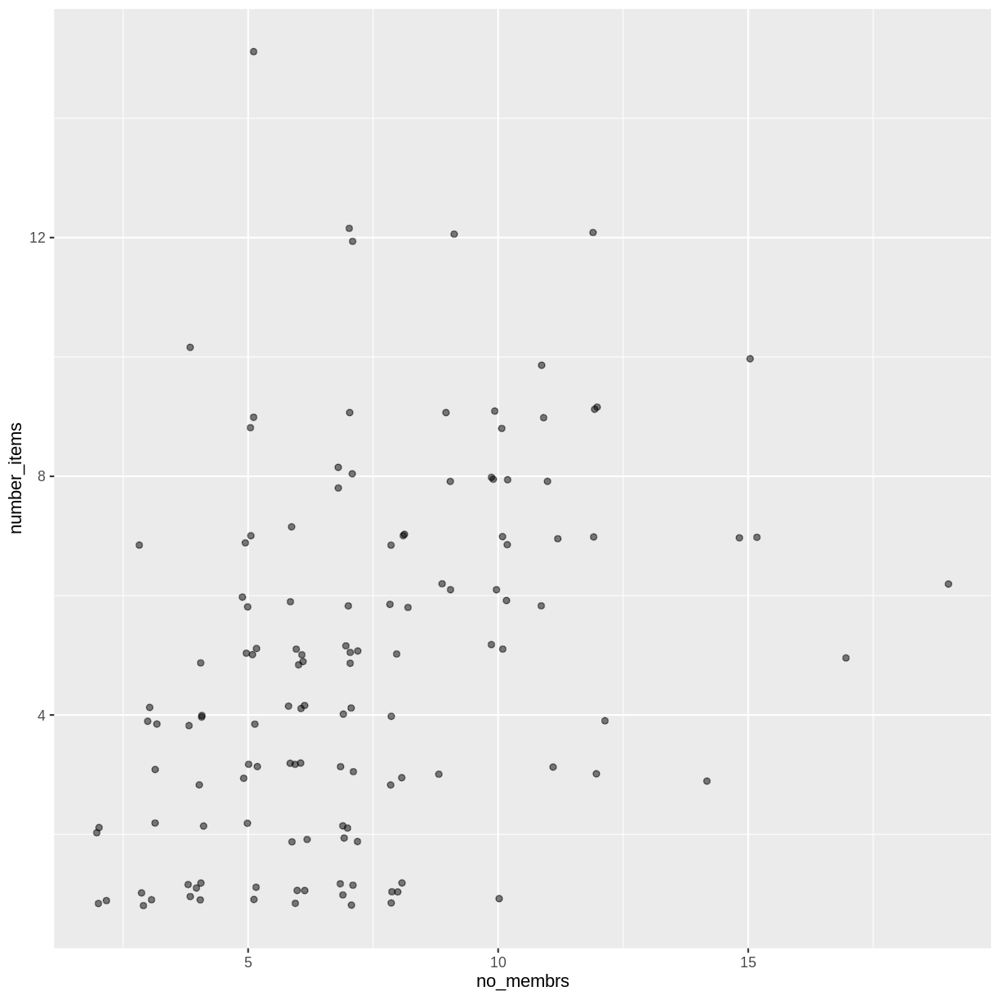

Before we Start
Overview
Teaching: 25 min
Exercises: 15 minQuestions
How to find your way around RStudio?
How to interact with R?
How to manage your environment?
How to install packages?
Objectives
Install latest version of R.
Install latest version of RStudio.
Navigate the RStudio GUI.
Install additional packages using the packages tab.
Install additional packages using R code.
What is R? What is RStudio?
The term “R” is used to refer to both the programming language and the
software that interprets the scripts written using it.
RStudio is currently a very popular way to not only write your R scripts but also to interact with the R software. To function correctly, RStudio needs R and therefore both need to be installed on your computer.
To make it easier to interact with R, we will use RStudio. RStudio is the most popular IDE (Integrated Development Environmemt) for R. An IDE is a piece of software that provides tools to make programming easier.
Why learn R?
R does not involve lots of pointing and clicking, and that’s a good thing
The learning curve might be steeper than with other software, but with R, the results of your analysis do not rely on remembering a succession of pointing and clicking, but instead on a series of written commands, and that’s a good thing! So, if you want to redo your analysis because you collected more data, you don’t have to remember which button you clicked in which order to obtain your results; you just have to run your script again.
Working with scripts makes the steps you used in your analysis clear, and the code you write can be inspected by someone else who can give you feedback and spot mistakes.
Working with scripts forces you to have a deeper understanding of what you are doing, and facilitates your learning and comprehension of the methods you use.
R code is great for reproducibility
Reproducibility is when someone else (including your future self) can obtain the same results from the same dataset when using the same analysis.
R integrates with other tools to generate manuscripts from your code. If you collect more data, or fix a mistake in your dataset, the figures and the statistical tests in your manuscript are updated automatically.
An increasing number of journals and funding agencies expect analyses to be reproducible, so knowing R will give you an edge with these requirements.
R is interdisciplinary and extensible
With 10,000+ packages that can be installed to extend its capabilities, R provides a framework that allows you to combine statistical approaches from many scientific disciplines to best suit the analytical framework you need to analyze your data. For instance, R has packages for image analysis, GIS, time series, population genetics, and a lot more.
R works on data of all shapes and sizes
The skills you learn with R scale easily with the size of your dataset. Whether your dataset has hundreds or millions of lines, it won’t make much difference to you.
R is designed for data analysis. It comes with special data structures and data types that make handling of missing data and statistical factors convenient.
R can connect to spreadsheets, databases, and many other data formats, on your computer or on the web.
R produces high-quality graphics
The plotting functionalities in R are endless, and allow you to adjust any aspect of your graph to convey most effectively the message from your data.
R has a large and welcoming community
Thousands of people use R daily. Many of them are willing to help you through mailing lists and websites such as Stack Overflow, or on the RStudio community. Questions which are backed up with short, reproducible code snippets are more likely to attract knowledgeable responses.
Not only is R free, but it is also open-source and cross-platform
Anyone can inspect the source code to see how R works. Because of this transparency, there is less chance for mistakes, and if you (or someone else) find some, you can report and fix bugs.
Because R is open source and is supported by a large community of developers and users, there is a very large selection of third-party add-on packages which are freely available to extend R’s native capabilities.


A tour of RStudio
Knowing your way around RStudio
Let’s start by learning about RStudio, which is an Integrated Development Environment (IDE) for working with R.
The RStudio IDE open-source product is free under the Affero General Public License (AGPL) v3. The RStudio IDE is also available with a commercial license and priority email support from RStudio, Inc.
We will use the RStudio IDE to write code, navigate the files on our computer, inspect the variables we create, and visualize the plots we generate. RStudio can also be used for other things (e.g., version control, developing packages, writing Shiny apps) that we will not cover during the workshop.
One of the advantages of using RStudio is that all the information you need to write code is available in a single window. Additionally, RStudio provides many shortcuts, autocompletion, and highlighting for the major file types you use while developing in R. RStudio makes typing easier and less error-prone.
Getting set up
It is good practice to keep a set of related data, analyses, and text self-contained in a single folder called the working directory. All of the scripts within this folder can then use relative paths to files. Relative paths indicate where inside the project a file is located (as opposed to absolute paths, which point to where a file is on a specific computer). Working this way makes it a lot easier to move your project around on your computer and share it with others without having to directly modify file paths in the individual scripts.
RStudio provides a helpful set of tools to do this through its “Projects” interface, which not only creates a working directory for you but also remembers its location (allowing you to quickly navigate to it). The interface also (optionally) preserves custom settings and open files to make it easier to resume work after a break.
Create a new project
- Under the
Filemenu, click onNew project, chooseNew directory, thenNew project - Enter a name for this new folder (or “directory”) and choose a convenient
location for it. This will be your working directory for the rest of the
day (e.g.,
~/data-carpentry) - Click on
Create project - Create a new file where we will type our scripts. Go to File > New File > R
script. Click the save icon on your toolbar and save your script as
“
script.R”.
The RStudio Interface
Let’s take a quick tour of RStudio.

RStudio is divided into four “panes”. The placement of these panes and their content can be customized (see menu, Tools -> Global Options -> Pane Layout).
The Default Layout is:
- Top Left - Source: your scripts and documents
- Bottom Left - Console: what R would look and be like without RStudio
- Top Right - Enviornment/History: look here to see what you have done
- Bottom Right - Files and more: see the contents of the project/working directory here, like your Script.R file
Organizing your working directory
Using a consistent folder structure across your projects will help keep things organized and make it easy to find/file things in the future. This can be especially helpful when you have multiple projects. In general, you might create directories (folders) for scripts, data, and documents. Here are some examples of suggested directories:
data/Use this folder to store your raw data and intermediate datasets. For the sake of transparency and provenance, you should always keep a copy of your raw data accessible and do as much of your data cleanup and preprocessing programmatically (i.e., with scripts, rather than manually) as possible.data_output/When you need to modify your raw data, it might be useful to store the modified versions of the datasets in a different folder.documents/Used for outlines, drafts, and other text.fig_output/This folder can store the graphics that are generated by your scripts.scripts/A place to keep your R scripts for different analyses or plotting.
You may want additional directories or subdirectories depending on your project needs, but these should form the backbone of your working directory.

The working directory
The working directory is an important concept to understand. It is the place where R will look for and save files. When you write code for your project, your scripts should refer to files in relation to the root of your working directory and only to files within this structure.
Using RStudio projects makes this easy and ensures that your working directory
is set up properly. If you need to check it, you can use getwd(). If for some
reason your working directory is not what it should be, you can change it in the
RStudio interface by navigating in the file browser to where your working directory
should be, clicking on the blue gear icon “More”, and selecting “Set As Working
Directory”. Alternatively, you can use setwd("/path/to/working/directory") to
reset your working directory. However, your scripts should not include this line,
because it will fail on someone else’s computer.
Downloading the data and getting set up
For this lesson we will use the following folders in our working directory: data/, data_output/ and fig_output/. Let’s write them all in lowercase to be consistent. We can create them using the RStudio interface by clicking on the “New Folder” button in the file pane (bottom right), or directly from R by typing at console:
dir.create("data")
dir.create("data_output")
dir.create("fig_output")
Go to the Figshare page for this curriculum and download the dataset called “SAFI_clean.csv”. The direct download link is: https://ndownloader.figshare.com/files/11492171. Place this downloaded file in the data/ you just created. You can do this directly from R by copying and pasting this in your terminal (your instructor can place this chunk of code in the Etherpad):
download.file("https://ndownloader.figshare.com/files/11492171",
"data/SAFI_clean.csv", mode = "wb")
Interacting with R
The basis of programming is that we write down instructions for the computer to follow, and then we tell the computer to follow those instructions. We write, or code, instructions in R because it is a common language that both the computer and we can understand. We call the instructions commands and we tell the computer to follow the instructions by executing (also called running) those commands.
There are two main ways of interacting with R: by using the console or by using script files (plain text files that contain your code). The console pane (in RStudio, the bottom left panel) is the place where commands written in the R language can be typed and executed immediately by the computer. It is also where the results will be shown for commands that have been executed. You can type commands directly into the console and press Enter to execute those commands, but they will be forgotten when you close the session.
Because we want our code and workflow to be reproducible, it is better to type the commands we want in the script editor and save the script. This way, there is a complete record of what we did, and anyone (including our future selves!) can easily replicate the results on their computer.
RStudio allows you to execute commands directly from the script editor by using the Ctrl + Enter shortcut (on Mac, Cmd + Return will work). The command on the current line in the script (indicated by the cursor) or all of the commands in selected text will be sent to the console and executed when you press Ctrl + Enter. If there is information in the console you do not need anymore, you can clear it with Ctrl + L. You can find other keyboard shortcuts in this RStudio cheatsheet about the RStudio IDE.
At some point in your analysis, you may want to check the content of a variable or the structure of an object without necessarily keeping a record of it in your script. You can type these commands and execute them directly in the console. RStudio provides the Ctrl + 1 and Ctrl + 2 shortcuts allow you to jump between the script and the console panes.
If R is ready to accept commands, the R console shows a > prompt. If R
receives a command (by typing, copy-pasting, or sent from the script editor using
Ctrl + Enter), R will try to execute it and, when
ready, will show the results and come back with a new > prompt to wait for new
commands.
If R is still waiting for you to enter more text,
the console will show a + prompt. It means that you haven’t finished entering
a complete command. This is likely because you have not ‘closed’ a parenthesis or
quotation, i.e. you don’t have the same number of left-parentheses as
right-parentheses or the same number of opening and closing quotation marks.
When this happens, and you thought you finished typing your command, click
inside the console window and press Esc; this will cancel the
incomplete command and return you to the > prompt. You can then proofread
the command(s) you entered and correct the error.
Installing additional packages using the packages tab
In addition to the core R installation, there are in excess of 10,000 additional packages which can be used to extend the functionality of R. Many of these have been written by R users and have been made available in central repositories, like the one hosted at CRAN, for anyone to download and install into their own R environment. In the course of this lesson we will be making use of several of these packages, such as ‘ggplot2’ and ‘dplyr’.
Additional packages can be installed from the ‘packages’ tab. On the packages tab, click the ‘Install’ icon and start typing the name of the package you want in the text box. As you type, packages matching your starting characters will be displayed in a drop-down list so that you can select them.

At the bottom of the Install Packages window is a check box to ‘Install’ dependencies. This is ticked by default, which is usually what you want. Packages can (and do) make use of functionality built into other packages, so for the functionality contained in the package you are installing to work properly, there may be other packages which have to be installed with them. The ‘Install dependencies’ option makes sure that this happens.
Exercise
Use the install option from the packages tab to install the ‘tidyverse’ package.
Solution
From the packages tab, click ‘Install’ from the toolbar and type ‘tidyverse’ into the textbox, then click ‘install’. The ‘tidyverse’ package is really a package of packages, including ‘ggplot2’ and ‘dplyr’, both of which require other packages to run correctly. All of these packages will be installed automatically. Depending on what packages have previously been installed in your R environment, the install of ‘tidyverse’ could be very quick or could take several minutes. As the install proceeds, messages relating to its progress will be written to the console. You will be able to see all of the packages which are actually being installed.
Because the install process accesses the CRAN repository, you will need an Internet connection to install packages.
It is also possible to install packages from other repositories, as well as Github or the local file system, but we won’t be looking at these options in this lesson.
Installing additional packages using R code
If you were watching the console window when you started the install of ‘tidyverse’, you may have noticed that the line
install.packages("tidyverse")
was written to the console before the start of the installation messages.
You could also have installed the tidyverse packages by running this command directly at the R terminal.
Key Points
Use RStudio to write and run R programs.
Use
install.packages()to install packages (libraries).
Introduction to R
Overview
Teaching: 50 min
Exercises: 30 minQuestions
What data types are available in R?
What is an object?
How can values be initially assigned to variables of different data types?
What arithmetic and logical operators can be used?
How can subsets be extracted from vectors?
How does R treat missing values?
How can we deal with missing values in R?
Objectives
Define the following terms as they relate to R: object, assign, call, function, arguments, options.
Assign values to objects in R.
Learn how to name objects.
Use comments to inform script.
Solve simple arithmetic operations in R.
Call functions and use arguments to change their default options.
Inspect the content of vectors and manipulate their content.
Subset and extract values from vectors.
Analyze vectors with missing data.
Creating objects in R
You can get output from R simply by typing math in the console:
3 + 5
[1] 8
12 / 7
[1] 1.714286
However, to do useful and interesting things, we need to assign values to
objects. To create an object, we need to give it a name followed by the
assignment operator <-, and the value we want to give it:
area_hectares <- 1.0
<- is the assignment operator. It assigns values on the right to objects on
the left. So, after executing x <- 3, the value of x is 3. The arrow can
be read as 3 goes into x. For historical reasons, you can also use =
for assignments, but not in every context. Because of the
slight
differences
in syntax, it is good practice to always use <- for assignments. More
generally we prefer the <- syntax over = because it makes it clear what
direction the assignment is operating (left assignment), and it increases the
read-ability of the code.
In RStudio, typing Alt + - (push Alt at the
same time as the - key) will write <- in a single keystroke in a
PC, while typing Option + - (push Option at the
same time as the - key) does the same in a Mac.
Objects can be given any name such as x, current_temperature, or
subject_id. You want your object names to be explicit and not too long. They
cannot start with a number (2x is not valid, but x2 is). R is case sensitive
(e.g., age is different from Age). There are some names that
cannot be used because they are the names of fundamental functions in R (e.g.,
if, else, for, see
here
for a complete list). In general, even if it’s allowed, it’s best to not use
other function names (e.g., c, T, mean, data, df, weights). If in
doubt, check the help to see if the name is already in use. It’s also best to
avoid dots (.) within an object name as in my.dataset. There are many
functions in R with dots in their names for historical reasons, but because dots
have a special meaning in R (for methods) and other programming languages, it’s
best to avoid them. It is also recommended to use nouns for object names, and
verbs for function names. It’s important to be consistent in the styling of your
code (where you put spaces, how you name objects, etc.). Using a consistent
coding style makes your code clearer to read for your future self and your
collaborators. In R, three popular style guides are
Google’s, Jean
Fan’s and the
tidyverse’s. The tidyverse’s is very
comprehensive and may seem overwhelming at first. You can install the
lintr package to automatically check
for issues in the styling of your code.
Objects vs. variables
What are known as
objectsinRare known asvariablesin many other programming languages. Depending on the context,objectandvariablecan have drastically different meanings. However, in this lesson, the two words are used synonymously. For more information see: https://cran.r-project.org/doc/manuals/r-release/R-lang.html#Objects
When assigning a value to an object, R does not print anything. You can force R to print the value by using parentheses or by typing the object name:
area_hectares <- 1.0 # doesn't print anything
(area_hectares <- 1.0) # putting parenthesis around the call prints the value of `area_hectares`
[1] 1
area_hectares # and so does typing the name of the object
[1] 1
Now that R has area_hectares in memory, we can do arithmetic with it. For
instance, we may want to convert this area into acres (area in acres is 2.47 times the area in hectares):
2.47 * area_hectares
[1] 2.47
We can also change an object’s value by assigning it a new one:
area_hectares <- 2.5
2.47 * area_hectares
[1] 6.175
This means that assigning a value to one object does not change the values of
other objects. For example, let’s store the plot’s area in acres
in a new object, area_acres:
area_acres <- 2.47 * area_hectares
and then change area_hectares to 50.
area_hectares <- 50
Exercise
What do you think is the current content of the object
area_acres? 123.5 or 6.175?Solution
The value of
area_acresis still 6.175 because you have not re-run the linearea_acres <- 2.47 * area_hectaressince changing the value ofarea_hectares.
Comments
All programming languages allow the programmer to include comments in their code. To do this in R we use the # character.
Anything to the right of the # sign and up to the end of the line is treated as a comment and is ignored by R. You can start lines with comments
or include them after any code on the line.
area_hectares <- 1.0 # land area in hectares
area_acres <- area_hectares * 2.47 # convert to acres
area_acres # print land area in acres.
[1] 2.47
RStudio makes it easy to comment or uncomment a paragraph: after selecting the lines you want to comment, press at the same time on your keyboard Ctrl + Shift + C. If you only want to comment out one line, you can put the cursor at any location of that line (i.e. no need to select the whole line), then press Ctrl + Shift + C.
Exercise
Create two variables
lengthandwidthand assign them values. It should be noted that, becauselengthandwidthare built-in R functions, R Studio might add “()” after length and width and if you leave the parentheses you will get unexpected results. This is why you might see other programmers abbreviate common words. Create a third variableareaand give it a value based on the current values oflengthandwidth. Show that changing the values of eitherlengthandwidthdoes not affect the value ofarea.Solution
length <- 2.5 width <- 3.2 area <- length * width area[1] 8# change the values of length and width length <- 7.0 width <- 6.5 # the value of area isn't changed area[1] 8
Functions and their arguments
Functions are “canned scripts” that automate more complicated sets of commands
including operations assignments, etc. Many functions are predefined, or can be
made available by importing R packages (more on that later). A function
usually gets one or more inputs called arguments. Functions often (but not
always) return a value. A typical example would be the function sqrt(). The
input (the argument) must be a number, and the return value (in fact, the
output) is the square root of that number. Executing a function (‘running it’)
is called calling the function. An example of a function call is:
b <- sqrt(a)
Here, the value of a is given to the sqrt() function, the sqrt() function
calculates the square root, and returns the value which is then assigned to
the object b. This function is very simple, because it takes just one argument.
The return ‘value’ of a function need not be numerical (like that of sqrt()),
and it also does not need to be a single item: it can be a set of things, or
even a dataset. We’ll see that when we read data files into R.
Arguments can be anything, not only numbers or filenames, but also other objects. Exactly what each argument means differs per function, and must be looked up in the documentation (see below). Some functions take arguments which may either be specified by the user, or, if left out, take on a default value: these are called options. Options are typically used to alter the way the function operates, such as whether it ignores ‘bad values’, or what symbol to use in a plot. However, if you want something specific, you can specify a value of your choice which will be used instead of the default.
Let’s try a function that can take multiple arguments: round().
round(3.14159)
[1] 3
Here, we’ve called round() with just one argument, 3.14159, and it has
returned the value 3. That’s because the default is to round to the nearest
whole number. If we want more digits we can see how to do that by getting
information about the round function. We can use args(round) or look at the
help for this function using ?round.
args(round)
function (x, digits = 0)
NULL
?round
We see that if we want a different number of digits, we can
type digits=2 or however many we want.
round(3.14159, digits = 2)
[1] 3.14
If you provide the arguments in the exact same order as they are defined you don’t have to name them:
round(3.14159, 2)
[1] 3.14
And if you do name the arguments, you can switch their order:
round(digits = 2, x = 3.14159)
[1] 3.14
It’s good practice to put the non-optional arguments (like the number you’re rounding) first in your function call, and to specify the names of all optional arguments. If you don’t, someone reading your code might have to look up the definition of a function with unfamiliar arguments to understand what you’re doing.
Exercise
Type in
?roundat the console and then look at the output in the Help pane. What other functions exist that are similar toround? How do you use thedigitsparameter in the round function?
Vectors and data types
A vector is the most common and basic data type in R, and is pretty much
the workhorse of R. A vector is composed by a series of values, which can be
either numbers or characters. We can assign a series of values to a vector using
the c() function. For example we can create a vector of the number of household
members for the households we’ve interviewed and assign
it to a new object hh_members:
hh_members <- c(3, 7, 10, 6)
hh_members
[1] 3 7 10 6
A vector can also contain characters. For example, we can have
a vector of the building material used to construct our
interview respondents’ walls (respondent_wall_type):
respondent_wall_type <- c("muddaub", "burntbricks", "sunbricks")
respondent_wall_type
[1] "muddaub" "burntbricks" "sunbricks"
The quotes around “muddaub”, etc. are essential here. Without the quotes R
will assume there are objects called muddaub, burntbricks and sunbricks. As these objects
don’t exist in R’s memory, there will be an error message.
There are many functions that allow you to inspect the content of a
vector. length() tells you how many elements are in a particular vector:
length(hh_members)
[1] 4
length(respondent_wall_type)
[1] 3
An important feature of a vector, is that all of the elements are the same type of data.
The function class() indicates the class (the type of element) of an object:
class(hh_members)
[1] "numeric"
class(respondent_wall_type)
[1] "character"
The function str() provides an overview of the structure of an object and its
elements. It is a useful function when working with large and complex
objects:
str(hh_members)
num [1:4] 3 7 10 6
str(respondent_wall_type)
chr [1:3] "muddaub" "burntbricks" "sunbricks"
You can use the c() function to add other elements to your vector:
possessions <- c("bicycle", "radio", "television")
possessions <- c(possessions, "mobile_phone") # add to the end of the vector
possessions <- c("car", possessions) # add to the beginning of the vector
possessions
[1] "car" "bicycle" "radio" "television" "mobile_phone"
In the first line, we take the original vector possessions,
add the value "mobile_phone" to the end of it, and save the result back into
possessions. Then we add the value "car" to the beginning, again saving the result
back into possessions.
We can do this over and over again to grow a vector, or assemble a dataset. As we program, this may be useful to add results that we are collecting or calculating.
An atomic vector is the simplest R data type and is a linear vector of a single type. Above, we saw
2 of the 6 main atomic vector types that R
uses: "character" and "numeric" (or "double"). These are the basic building blocks that
all R objects are built from. The other 4 atomic vector types are:
"logical"forTRUEandFALSE(the boolean data type)"integer"for integer numbers (e.g.,2L, theLindicates to R that it’s an integer)"complex"to represent complex numbers with real and imaginary parts (e.g.,1 + 4i) and that’s all we’re going to say about them"raw"for bitstreams that we won’t discuss further
You can check the type of your vector using the typeof() function and inputting your vector as the argument.
Vectors are one of the many data structures that R uses. Other important
ones are lists (list), matrices (matrix), data frames (data.frame),
factors (factor) and arrays (array).
Exercise
We’ve seen that atomic vectors can be of type character, numeric (or double), integer, and logical. But what happens if we try to mix these types in a single vector?
Solution
R implicitly converts them to all be the same type.
What will happen in each of these examples? (hint: use
class()to check the data type of your objects):num_char <- c(1, 2, 3, "a") num_logical <- c(1, 2, 3, TRUE) char_logical <- c("a", "b", "c", TRUE) tricky <- c(1, 2, 3, "4")Why do you think it happens?
Solution
Vectors can be of only one data type. R tries to convert (coerce) the content of this vector to find a “common denominator” that doesn’t lose any information.
How many values in
combined_logicalare"TRUE"(as a character) in the following example:num_logical <- c(1, 2, 3, TRUE) char_logical <- c("a", "b", "c", TRUE) combined_logical <- c(num_logical, char_logical)
Solution
Only one. There is no memory of past data types, and the coercion happens the first time the vector is evaluated. Therefore, the
TRUEinnum_logicalgets converted into a1before it gets converted into"1"incombined_logical.You’ve probably noticed that objects of different types get converted into a single, shared type within a vector. In R, we call converting objects from one class into another class coercion. These conversions happen according to a hierarchy, whereby some types get preferentially coerced into other types. Can you draw a diagram that represents the hierarchy of how these data types are coerced?
Subsetting vectors
If we want to extract one or several values from a vector, we must provide one or several indices in square brackets. For instance:
respondent_wall_type <- c("muddaub", "burntbricks", "sunbricks")
respondent_wall_type[2]
[1] "burntbricks"
respondent_wall_type[c(3, 2)]
[1] "sunbricks" "burntbricks"
We can also repeat the indices to create an object with more elements than the original one:
more_respondent_wall_type <- respondent_wall_type[c(1, 2, 3, 2, 1, 3)]
more_respondent_wall_type
[1] "muddaub" "burntbricks" "sunbricks" "burntbricks" "muddaub"
[6] "sunbricks"
R indices start at 1. Programming languages like Fortran, MATLAB, Julia, and R start counting at 1, because that’s what human beings typically do. Languages in the C family (including C++, Java, Perl, and Python) count from 0 because that’s simpler for computers to do.
Conditional subsetting
Another common way of subsetting is by using a logical vector. TRUE will
select the element with the same index, while FALSE will not:
hh_members <- c(3, 7, 10, 6)
hh_members[c(TRUE, FALSE, TRUE, TRUE)]
[1] 3 10 6
Typically, these logical vectors are not typed by hand, but are the output of other functions or logical tests. For instance, if you wanted to select only the values above 5:
hh_members > 5 # will return logicals with TRUE for the indices that meet the condition
[1] FALSE TRUE TRUE TRUE
## so we can use this to select only the values above 5
hh_members[hh_members > 5]
[1] 7 10 6
You can combine multiple tests using & (both conditions are true, AND) or |
(at least one of the conditions is true, OR):
hh_members[hh_members < 4 | hh_members > 7]
[1] 3 10
hh_members[hh_members >= 7 & hh_members == 3]
numeric(0)
Here, < stands for “less than”, > for “greater than”, >= for “greater than
or equal to”, and == for “equal to”. The double equal sign == is a test for
numerical equality between the left and right hand sides, and should not be
confused with the single = sign, which performs variable assignment (similar
to <-).
A common task is to search for certain strings in a vector. One could use the
“or” operator | to test for equality to multiple values, but this can quickly
become tedious.
possessions <- c("car", "bicycle", "radio", "television", "mobile_phone")
possessions[possessions == "car" | possessions == "bicycle"] # returns both car and bicycle
[1] "car" "bicycle"
The function %in% allows you to test if any of the elements of a search vector
(on the left hand side) are found in the target vector (on the right hand side):
possessions %in% c("car", "bicycle")
[1] TRUE TRUE FALSE FALSE FALSE
Note that the output is the same length as the search vector on the left hand
side, because %in% checks whether each element of the search vector is found
somewhere in the target vector. Thus, you can use %in% to select the elements
in the search vector that appear in your target vector:
possessions %in% c("car", "bicycle", "motorcycle", "truck", "boat", "bus")
[1] TRUE TRUE FALSE FALSE FALSE
possessions[possessions %in% c("car", "bicycle", "motorcycle", "truck", "boat", "bus")]
[1] "car" "bicycle"
Missing data
As R was designed to analyze datasets, it includes the concept of missing data
(which is uncommon in other programming languages). Missing data are represented
in vectors as NA.
When doing operations on numbers, most functions will return NA if the data
you are working with include missing values. This feature
makes it harder to overlook the cases where you are dealing with missing data.
You can add the argument na.rm=TRUE to calculate the result while ignoring
the missing values.
rooms <- c(2, 1, 1, NA, 4)
mean(rooms)
[1] NA
max(rooms)
[1] NA
mean(rooms, na.rm = TRUE)
[1] 2
max(rooms, na.rm = TRUE)
[1] 4
If your data include missing values, you may want to become familiar with the
functions is.na(), na.omit(), and complete.cases(). See below for
examples.
## Extract those elements which are not missing values.
rooms[!is.na(rooms)]
[1] 2 1 1 4
## Count the number of missing values.
sum(is.na(rooms))
[1] 1
## Returns the object with incomplete cases removed. The returned object is an atomic vector of type `"numeric"` (or `"double"`).
na.omit(rooms)
[1] 2 1 1 4
attr(,"na.action")
[1] 4
attr(,"class")
[1] "omit"
## Extract those elements which are complete cases. The returned object is an atomic vector of type `"numeric"` (or `"double"`).
rooms[complete.cases(rooms)]
[1] 2 1 1 4
Recall that you can use the typeof() function to find the type of your atomic vector.
Exercise
Using this vector of rooms, create a new vector with the NAs removed.
rooms <- c(1, 2, 1, 1, NA, 3, 1, 3, 2, 1, 1, 8, 3, 1, NA, 1)Use the function
median()to calculate the median of theroomsvector.Use R to figure out how many households in the set use more than 2 rooms for sleeping.
Solution
rooms <- c(1, 2, 1, 1, NA, 3, 1, 3, 2, 1, 1, 8, 3, 1, NA, 1) rooms_no_na <- rooms[!is.na(rooms)] # or rooms_no_na <- na.omit(rooms) # 2. median(rooms, na.rm = TRUE)[1] 1# 3. rooms_above_2 <- rooms_no_na[rooms_no_na > 2] length(rooms_above_2)[1] 4
Now that we have learned how to write scripts, and the basics of R’s data structures, we are ready to start working with the SAFI dataset we have been using in the other lessons, and learn about data frames.
Key Points
Access individual values by location using
[].Access arbitrary sets of data using
[c(...)].Use logical operations and logical vectors to access subsets of data.
Starting with Data
Overview
Teaching: 50 min
Exercises: 30 minQuestions
What is a data.frame?
How can I read a complete csv file into R?
How can I get basic summary information about my dataset?
How can I change the way R treats strings in my dataset?
Why would I want strings to be treated differently?
How are dates represented in R and how can I change the format?
Objectives
Describe what a data frame is.
Load external data from a .csv file into a data frame.
Summarize the contents of a data frame.
Subset and extract values from data frames.
Describe the difference between a factor and a string.
Convert between strings and factors.
Reorder and rename factors.
Change how character strings are handled in a data frame.
Examine and change date formats.
What are data frames and tibbles?
Data frames are the de facto data structure for tabular data in R, and what
we use for data processing, statistics, and plotting.
A data frame is the representation of data in the format of a table where the columns are vectors that all have the same length. Data frames are analogous to the more familiar spreadsheet in programs such as Excel, with one key difference. Because columns are vectors, each column must contain a single type of data (e.g., characters, integers, factors). For example, here is a figure depicting a data frame comprising a numeric, a character, and a logical vector.

A data frame can be created by hand, but most commonly they are generated by the
functions read_csv() or read_table(); in other words, when importing
spreadsheets from your hard drive (or the web). We will now demonstrate how to
import tabular data using read_csv().
Presentation of the SAFI Data
SAFI (Studying African Farmer-Led Irrigation) is a study looking at farming and irrigation methods in Tanzania and Mozambique. The survey data was collected through interviews conducted between November 2016 and June 2017. For this lesson, we will be using a subset of the available data. For information about the full teaching dataset used in other lessons in this workshop, see the dataset description.
We will be using a subset of the cleaned version of the dataset that was produced through cleaning in OpenRefine. Each row holds information for a single interview respondent, and the columns represent:
| column_name | description |
|---|---|
| key_id | Added to provide a unique Id for each observation. (The InstanceID field does this as well but it is not as convenient to use) |
| village | Village name |
| interview_date | Date of interview |
| no_membrs | How many members in the household? |
| years_liv | How many years have you been living in this village or neighboring village? |
| respondent_wall_type | What type of walls does their house have (from list) |
| rooms | How many rooms in the main house are used for sleeping? |
| memb_assoc | Are you a member of an irrigation association? |
| affect_conflicts | Have you been affected by conflicts with other irrigators in the area? |
| liv_count | Number of livestock owned. |
| items_owned | Which of the following items are owned by the household? (list) |
| no_meals | How many meals do people in your household normally eat in a day? |
| months_lack_food | Indicate which months, In the last 12 months have you faced a situation when you did not have enough food to feed the household? |
| instanceID | Unique identifier for the form data submission |
You are going load the data in R’s memory using the function read_csv()
from the readr package, which is part of the tidyverse; learn
more about the tidyverse collection of packages
here.
readr gets installed as part as the tidyverse installation.
When you load the tidyverse (library(tidyverse)), the core packages
(the packages used in most data analyses) get loaded, including readr.
So, before we can use the read_csv() function, we need to load the package.
Also, if you recall, the missing data is encoded as “NULL” in the dataset.
We’ll tell it to the function, so R will automatically convert all the “NULL”
entries in the dataset into NA.
library(tidyverse)
interviews <- read_csv("data/SAFI_clean.csv", na = "NULL")
If you were to type in the code above, it is likely that the read.csv()
function would appear in the automatically populated list of functions. This
function is different from the read_csv() function, as it is included in the
“base” packages that come pre-installed with R. Overall, read.csv() behaves
similar to read_csv(), with a few notable differences. First, read.csv()
coerces column names with spaces and/or special characters to different names
(e.g. interview date becomes interview.date). Second, read.csv()
stores data as a data.frame, where read_csv() stores data as a tibble.
We prefer tibbles because they have nice printing properties among other
desirable qualities. Read more about tibbles here.
The second statement in the code above creates a data frame but doesn’t output
any data because, as you might recall, assignments (<-) don’t display
anything. (Note, however, that read_csv may show informational
text about the data frame that is created.) If we want to check that our data
has been loaded, we can see the contents of the data frame by typing its name:
interviews in the console.
interviews
## Try also
## View(interviews)
## head(interviews)
# A tibble: 131 x 14
key_ID village interview_date no_membrs years_liv respondent_wall… rooms
<dbl> <chr> <dttm> <dbl> <dbl> <chr> <dbl>
1 1 God 2016-11-17 00:00:00 3 4 muddaub 1
2 1 God 2016-11-17 00:00:00 7 9 muddaub 1
3 3 God 2016-11-17 00:00:00 10 15 burntbricks 1
4 4 God 2016-11-17 00:00:00 7 6 burntbricks 1
5 5 God 2016-11-17 00:00:00 7 40 burntbricks 1
6 6 God 2016-11-17 00:00:00 3 3 muddaub 1
7 7 God 2016-11-17 00:00:00 6 38 muddaub 1
8 8 Chirod… 2016-11-16 00:00:00 12 70 burntbricks 3
9 9 Chirod… 2016-11-16 00:00:00 8 6 burntbricks 1
10 10 Chirod… 2016-12-16 00:00:00 12 23 burntbricks 5
# … with 121 more rows, and 7 more variables: memb_assoc <chr>,
# affect_conflicts <chr>, liv_count <dbl>, items_owned <chr>, no_meals <dbl>,
# months_lack_food <chr>, instanceID <chr>
Note
read_csv()assumes that fields are delimited by commas. However, in several countries, the comma is used as a decimal separator and the semicolon (;) is used as a field delimiter. If you want to read in this type of files in R, you can use theread_csv2function. It behaves exactly likeread_csvbut uses different parameters for the decimal and the field separators. If you are working with another format, they can be both specified by the user. Check out the help forread_csv()by typing?read_csvto learn more. There is also theread_tsv()for tab-separated data files, andread_delim()allows you to specify more details about the structure of your file.
Note that read_csv() actually loads the data as a tibble.
A tibble is an extension of R data frames used by the tidyverse. When the
data is read using read_csv(), it is stored in an object of class tbl_df,
tbl, and data.frame. You can see the class of an object with
class(interviews)
[1] "spec_tbl_df" "tbl_df" "tbl" "data.frame"
As a tibble, the type of data included in each column is listed in an
abbreviated fashion below the column names. For instance, here key_ID is a
column of integers (abbreviated <int>), village is a column of characters
(<chr>) and the interview_date is a column in the “date and time” format
(<dttm>).
Inspecting data frames
When calling a tbl_df object (like interviews here), there is already a lot of information about our data frame being displayed such as the number of rows, the number of columns, the names of the columns, and as we just saw the class of data stored in each column. However, there are functions to extract this information from data frames. Here is a non-exhaustive list of some of these
functions. Let’s try them out!
Size:
dim(interviews)- returns a vector with the number of rows as the first element, and the number of columns as the second element (the dimensions of the object)nrow(interviews)- returns the number of rowsncol(interviews)- returns the number of columns
Content:
head(interviews)- shows the first 6 rowstail(interviews)- shows the last 6 rows
Names:
names(interviews)- returns the column names (synonym ofcolnames()fordata.frameobjects)
Summary:
str(interviews)- structure of the object and information about the class, length and content of each columnsummary(interviews)- summary statistics for each column
Note: most of these functions are “generic.” They can be used on other types of objects besides data frames.
Indexing and subsetting data frames
Our interviews data frame has rows and columns (it has 2 dimensions).
In practice, we may not need the entire data frame; for instance, we may only
be interested in a subset of the observations (the rows) or a particular set
of variables (the columns). If we want to
extract some specific data from it, we need to specify the “coordinates” we
want from it. Row numbers come first, followed by column numbers.
Tip
Indexing a
tibblewith[or[[or$always results in atibble. However, note this is not true in general for data frames, so be careful! Different ways of specifying these coordinates can lead to results with different classes. This is covered in the Software Carpentry lesson R for Reproducible Scientific Analysis.
## first element in the first column of the data frame (as a data.frame)
interviews[1, 1]
# A tibble: 1 x 1
key_ID
<dbl>
1 1
## first element in the 6th column (as a data.frame)
interviews[1, 6]
# A tibble: 1 x 1
respondent_wall_type
<chr>
1 muddaub
## first column of the data frame (as a vector)
interviews[[1]]
[1] 1 1 3 4 5 6 7 8 9 10 11 12 13 14 15 16 17 18
[19] 19 20 21 22 23 24 25 26 27 28 29 30 31 32 33 34 35 36
[37] 37 38 39 40 41 42 43 44 45 46 47 48 49 50 51 52 21 54
[55] 55 56 57 58 59 60 61 62 63 64 65 66 67 68 69 70 71 127
[73] 133 152 153 155 178 177 180 181 182 186 187 195 196 197 198 201 202 72
[91] 73 76 83 85 89 101 103 102 78 80 104 105 106 109 110 113 118 125
[109] 119 115 108 116 117 144 143 150 159 160 165 166 167 174 175 189 191 192
[127] 126 193 194 199 200
## first column of the data frame (as a data.frame)
interviews[1]
# A tibble: 131 x 1
key_ID
<dbl>
1 1
2 1
3 3
4 4
5 5
6 6
7 7
8 8
9 9
10 10
# … with 121 more rows
## first three elements in the 7th column (as a data.frame)
interviews[1:3, 7]
# A tibble: 3 x 1
rooms
<dbl>
1 1
2 1
3 1
## the 3rd row of the data frame (as a data.frame)
interviews[3, ]
# A tibble: 1 x 14
key_ID village interview_date no_membrs years_liv respondent_wall… rooms
<dbl> <chr> <dttm> <dbl> <dbl> <chr> <dbl>
1 3 God 2016-11-17 00:00:00 10 15 burntbricks 1
# … with 7 more variables: memb_assoc <chr>, affect_conflicts <chr>,
# liv_count <dbl>, items_owned <chr>, no_meals <dbl>, months_lack_food <chr>,
# instanceID <chr>
## equivalent to head_interviews <- head(interviews)
head_interviews <- interviews[1:6, ]
: is a special function that creates numeric vectors of integers in increasing
or decreasing order, test 1:10 and 10:1 for instance.
You can also exclude certain indices of a data frame using the “-” sign:
interviews[, -1] # The whole data frame, except the first column
# A tibble: 131 x 13
village interview_date no_membrs years_liv respondent_wall… rooms
<chr> <dttm> <dbl> <dbl> <chr> <dbl>
1 God 2016-11-17 00:00:00 3 4 muddaub 1
2 God 2016-11-17 00:00:00 7 9 muddaub 1
3 God 2016-11-17 00:00:00 10 15 burntbricks 1
4 God 2016-11-17 00:00:00 7 6 burntbricks 1
5 God 2016-11-17 00:00:00 7 40 burntbricks 1
6 God 2016-11-17 00:00:00 3 3 muddaub 1
7 God 2016-11-17 00:00:00 6 38 muddaub 1
8 Chirod… 2016-11-16 00:00:00 12 70 burntbricks 3
9 Chirod… 2016-11-16 00:00:00 8 6 burntbricks 1
10 Chirod… 2016-12-16 00:00:00 12 23 burntbricks 5
# … with 121 more rows, and 7 more variables: memb_assoc <chr>,
# affect_conflicts <chr>, liv_count <dbl>, items_owned <chr>, no_meals <dbl>,
# months_lack_food <chr>, instanceID <chr>
interviews[-c(7:131), ] # Equivalent to head(interviews)
# A tibble: 6 x 14
key_ID village interview_date no_membrs years_liv respondent_wall… rooms
<dbl> <chr> <dttm> <dbl> <dbl> <chr> <dbl>
1 1 God 2016-11-17 00:00:00 3 4 muddaub 1
2 1 God 2016-11-17 00:00:00 7 9 muddaub 1
3 3 God 2016-11-17 00:00:00 10 15 burntbricks 1
4 4 God 2016-11-17 00:00:00 7 6 burntbricks 1
5 5 God 2016-11-17 00:00:00 7 40 burntbricks 1
6 6 God 2016-11-17 00:00:00 3 3 muddaub 1
# … with 7 more variables: memb_assoc <chr>, affect_conflicts <chr>,
# liv_count <dbl>, items_owned <chr>, no_meals <dbl>, months_lack_food <chr>,
# instanceID <chr>
Data frames can be subset by calling indices (as shown previously), but also by calling their column names directly:
interviews["village"] # Result is a data frame
interviews[, "village"] # Result is a data frame
interviews[["village"]] # Result is a vector
interviews$village # Result is a vector
In RStudio, you can use the autocompletion feature to get the full and correct names of the columns.
Exercise
Create a data frame (
interviews_100) containing only the data in row 100 of theinterviewsdataset.Notice how
nrow()gave you the number of rows in a data frame?
- Use that number to pull out just that last row in the data frame.
- Compare that with what you see as the last row using
tail()to make sure it’s meeting expectations.- Pull out that last row using
nrow()instead of the row number.- Create a new data frame (
interviews_last) from that last row.Using the number of rows in the interviews dataset that you found in question 2, extract the row that is in the middle of the dataset. Store the content of this middle row in an object named
interviews_middle. (hint: This dataset has an odd number of rows, so finding the middle is a bit trickier than dividing n_rows by 2. Use the median( ) function and what you’ve learned about sequences in R to extract the middle row!Combine
nrow()with the-notation above to reproduce the behavior ofhead(interviews), keeping just the first through 6th rows of the interviews dataset.Solution
## 1. interviews_100 <- interviews[100, ] ## 2. # Saving `n_rows` to improve readability and reduce duplication n_rows <- nrow(interviews) interviews_last <- interviews[n_rows, ] ## 3. interviews_middle <- interviews[median(1:n_rows), ] ## 4. interviews_head <- interviews[-(7:n_rows), ]
Factors
R has a special data class, called factor, to deal with categorical data that you may encounter when creating plots or doing statistical analyses. Factors are very useful and actually contribute to making R particularly well suited to working with data. So we are going to spend a little time introducing them.
Factors represent categorical data. They are stored as integers associated with
labels and they can be ordered (ordinal) or unordered (nominal). Factors
create a structured relation between the different levels (values) of a
categorical variable, such as days of the week or responses to a question in
a survey. This can make it easier to see how one element relates to the
other elements in a column. While factors look (and often behave) like
character vectors, they are actually treated as integer vectors by R. So
you need to be very careful when treating them as strings.
Once created, factors can only contain a pre-defined set of values, known as levels. By default, R always sorts levels in alphabetical order. For instance, if you have a factor with 2 levels:
respondent_floor_type <- factor(c("earth", "cement", "cement", "earth"))
R will assign 1 to the level "cement" and 2 to the level "earth"
(because c comes before e, even though the first element in this vector is
"earth"). You can see this by using the function levels() and you can find
the number of levels using nlevels():
levels(respondent_floor_type)
[1] "cement" "earth"
nlevels(respondent_floor_type)
[1] 2
Sometimes, the order of the factors does not matter. Other times you might want
to specify the order because it is meaningful (e.g., “low”, “medium”, “high”).
It may improve your visualization, or it may be required by a particular type of
analysis. Here, one way to reorder our levels in the respondent_floor_type vector would be:
respondent_floor_type # current order
[1] earth cement cement earth
Levels: cement earth
respondent_floor_type <- factor(respondent_floor_type, levels = c("earth", "cement"))
respondent_floor_type # after re-ordering
[1] earth cement cement earth
Levels: earth cement
In R’s memory, these factors are represented by integers (1, 2), but are more
informative than integers because factors are self describing: "cement",
"earth" is more descriptive than 1, and 2. Which one is “earth”? You
wouldn’t be able to tell just from the integer data. Factors, on the other hand,
have this information built in. It is particularly helpful when there are many
levels. It also makes renaming levels easier. Let’s say we made a mistake and need to recode “cement” to “brick”.
levels(respondent_floor_type)
[1] "earth" "cement"
levels(respondent_floor_type)[2] <- "brick"
levels(respondent_floor_type)
[1] "earth" "brick"
respondent_floor_type
[1] earth brick brick earth
Levels: earth brick
So far, your factor is unordered, like a nominal variable. R does not know the
difference between a nominal and an ordinal variable. You make your factor an
ordered factor by using the ordered=TRUE option inside your factor function.
Note how the reported levels changed from the unordered factor above to the
ordered version below. Ordered levels use the less than sign < to denote
level ranking.
respondent_floor_type_ordered <- factor(respondent_floor_type, ordered=TRUE)
respondent_floor_type_ordered # after setting as ordered factor
[1] earth brick brick earth
Levels: earth < brick
Converting factors
If you need to convert a factor to a character vector, you use
as.character(x).
as.character(respondent_floor_type)
[1] "earth" "brick" "brick" "earth"
Converting factors where the levels appear as numbers (such as concentration
levels, or years) to a numeric vector is a little trickier. The as.numeric()
function returns the index values of the factor, not its levels, so it will
result in an entirely new (and unwanted in this case) set of numbers.
One method to avoid this is to convert factors to characters, and then to numbers.
Another method is to use the levels() function. Compare:
year_fct <- factor(c(1990, 1983, 1977, 1998, 1990))
as.numeric(year_fct) # Wrong! And there is no warning...
[1] 3 2 1 4 3
as.numeric(as.character(year_fct)) # Works...
[1] 1990 1983 1977 1998 1990
as.numeric(levels(year_fct))[year_fct] # The recommended way.
[1] 1990 1983 1977 1998 1990
Notice that in the recommended levels() approach, three important steps occur:
- We obtain all the factor levels using
levels(year_fct) - We convert these levels to numeric values using
as.numeric(levels(year_fct)) - We then access these numeric values using the underlying integers of the
vector
year_fctinside the square brackets
Renaming factors
When your data is stored as a factor, you can use the plot() function to get a
quick glance at the number of observations represented by each factor level.
Let’s extract the memb_assoc column from our data frame, convert it into a
factor, and use it to look at the number of interview respondents who were or
were not members of an irrigation association:
## create a vector from the data frame column "memb_assoc"
memb_assoc <- interviews$memb_assoc
## convert it into a factor
memb_assoc <- as.factor(memb_assoc)
## let's see what it looks like
memb_assoc
[1] <NA> yes <NA> <NA> <NA> <NA> no yes no no <NA> yes no <NA> yes
[16] <NA> <NA> <NA> <NA> <NA> no <NA> <NA> no no no <NA> no yes <NA>
[31] <NA> yes no yes yes yes <NA> yes <NA> yes <NA> no no <NA> no
[46] no yes <NA> <NA> yes <NA> no yes no <NA> yes no no <NA> no
[61] yes <NA> <NA> <NA> no yes no no no no yes <NA> no yes <NA>
[76] <NA> yes no no yes no no yes no yes no no <NA> yes yes
[91] yes yes yes no no no no yes no no yes yes no <NA> no
[106] no <NA> no no <NA> no <NA> <NA> no no no no yes no no
[121] no no no no no no no no no yes <NA>
Levels: no yes
## bar plot of the number of interview respondents who were
## members of irrigation association:
plot(memb_assoc)
Looking at the plot compared to the output of the vector, we can see that in addition to “no”s and “yes”s, there are some respondents for which the information about whether they were part of an irrigation association hasn’t been recorded, and encoded as missing data. They do not appear on the plot. Let’s encode them differently so they can counted and visualized in our plot.
## Let's recreate the vector from the data frame column "memb_assoc"
memb_assoc <- interviews$memb_assoc
## replace the missing data with "undetermined"
memb_assoc[is.na(memb_assoc)] <- "undetermined"
## convert it into a factor
memb_assoc <- as.factor(memb_assoc)
## let's see what it looks like
memb_assoc
[1] undetermined yes undetermined undetermined undetermined
[6] undetermined no yes no no
[11] undetermined yes no undetermined yes
[16] undetermined undetermined undetermined undetermined undetermined
[21] no undetermined undetermined no no
[26] no undetermined no yes undetermined
[31] undetermined yes no yes yes
[36] yes undetermined yes undetermined yes
[41] undetermined no no undetermined no
[46] no yes undetermined undetermined yes
[51] undetermined no yes no undetermined
[56] yes no no undetermined no
[61] yes undetermined undetermined undetermined no
[66] yes no no no no
[71] yes undetermined no yes undetermined
[76] undetermined yes no no yes
[81] no no yes no yes
[86] no no undetermined yes yes
[91] yes yes yes no no
[96] no no yes no no
[101] yes yes no undetermined no
[106] no undetermined no no undetermined
[111] no undetermined undetermined no no
[116] no no yes no no
[121] no no no no no
[126] no no no no yes
[131] undetermined
Levels: no undetermined yes
## bar plot of the number of interview respondents who were
## members of irrigation association:
plot(memb_assoc)
Exercise
Rename the levels of the factor to have the first letter in uppercase: “No”,”Undetermined”, and “Yes”.
Now that we have renamed the factor level to “Undetermined”, can you recreate the barplot such that “Undetermined” is last (after “Yes”)?
Solution
levels(memb_assoc) <- c("No", "Undetermined", "Yes") memb_assoc <- factor(memb_assoc, levels = c("No", "Yes", "Undetermined")) plot(memb_assoc)
Formatting Dates
One of the most common issues that new (and experienced!) R users have is
converting date and time information into a variable that is appropriate and
usable during analyses. As a reminder from earlier in this lesson, the best
practice for dealing with date data is to ensure that each component of your
date is stored as a separate variable. In our dataset, we have a
column interview_date which contains information about the
year, month, and day that the interview was conducted. Let’s
convert those dates into three separate columns.
str(interviews)
We are going to use the package lubridate, which is included in the
tidyverse installation but not loaded by default, so we have to load
it explicitly with library(lubridate).
Start by loading the required package:
library(lubridate)
The lubridate function ymd() takes a vector representing year, month, and day, and converts it to a
Date vector. Date is a class of data recognized by R as being a date and can
be manipulated as such. The argument that the function requires is flexible,
but, as a best practice, is a character vector formatted as “YYYY-MM-DD”.
Let’s extract our interview_date column and inspect the structure:
dates <- interviews$interview_date
str(dates)
POSIXct[1:131], format: "2016-11-17" "2016-11-17" "2016-11-17" "2016-11-17" "2016-11-17" ...
When we imported the data in R, read_csv() recognized that this column contained date information. We can now use the day(), month() and year() functions to extract this information from the date, and create new columns in our data frame to store it:
interviews$day <- day(dates)
interviews$month <- month(dates)
interviews$year <- year(dates)
interviews
# A tibble: 131 x 17
key_ID village interview_date no_membrs years_liv respondent_wall… rooms
<dbl> <chr> <dttm> <dbl> <dbl> <chr> <dbl>
1 1 God 2016-11-17 00:00:00 3 4 muddaub 1
2 1 God 2016-11-17 00:00:00 7 9 muddaub 1
3 3 God 2016-11-17 00:00:00 10 15 burntbricks 1
4 4 God 2016-11-17 00:00:00 7 6 burntbricks 1
5 5 God 2016-11-17 00:00:00 7 40 burntbricks 1
6 6 God 2016-11-17 00:00:00 3 3 muddaub 1
7 7 God 2016-11-17 00:00:00 6 38 muddaub 1
8 8 Chirod… 2016-11-16 00:00:00 12 70 burntbricks 3
9 9 Chirod… 2016-11-16 00:00:00 8 6 burntbricks 1
10 10 Chirod… 2016-12-16 00:00:00 12 23 burntbricks 5
# … with 121 more rows, and 10 more variables: memb_assoc <chr>,
# affect_conflicts <chr>, liv_count <dbl>, items_owned <chr>, no_meals <dbl>,
# months_lack_food <chr>, instanceID <chr>, day <int>, month <dbl>,
# year <dbl>
Notice the three new columns at the end of our data frame.
Key Points
Use read_csv to read tabular data in R.
Use factors to represent categorical data in R.
Data Wrangling with dplyr and tidyr
Overview
Teaching: 50 min
Exercises: 30 minQuestions
How can I select specific rows and/or columns from a dataframe?
How can I combine multiple commands into a single command?
How can create new columns or remove existing columns from a dataframe?
How can I reformat a dataframe to meet my needs?
Objectives
Describe the purpose of an R package and the
dplyrandtidyrpackages.Select certain columns in a dataframe with the
dplyrfunctionselect.Select certain rows in a dataframe according to filtering conditions with the
dplyrfunctionfilter.Link the output of one
dplyrfunction to the input of another function with the ‘pipe’ operator%>%.Add new columns to a dataframe that are functions of existing columns with
mutate.Use the split-apply-combine concept for data analysis.
Use
summarize,group_by, andcountto split a dataframe into groups of observations, apply a summary statistics for each group, and then combine the results.Describe the concept of a wide and a long table format and for which purpose those formats are useful.
Describe the roles of variable names and their associated values when a table is reshaped.
Reshape a dataframe from long to wide format and back with the
pivot_widerandpivot_longercommands from thetidyrpackage.Export a dataframe to a csv file.
dplyr is a package for making tabular data wrangling easier by using a
limited set of functions that can be combined to extract and summarize insights
from your data. It pairs nicely with tidyr which enables you to swiftly
convert between different data formats (long vs. wide) for plotting and analysis.
Similarly to readr, dplyr and tidyr are also part of the
tidyverse. These packages were loaded in R’s memory when we called
library(tidyverse) earlier.
Note
The packages in the tidyverse, namely
dplyr,tidyrandggplot2accept both the British (e.g. summarise) and American (e.g. summarize) spelling variants of different function and option names. For this lesson, we utilize the American spellings of different functions; however, feel free to use the regional variant for where you are teaching.
What is an R package?
The package dplyr provides easy tools for the most common data
wrangling tasks. It is built to work directly with dataframes, with many
common tasks optimized by being written in a compiled language (C++) (not all R
packages are written in R!).
The package tidyr addresses the common problem of wanting to reshape your
data for plotting and use by different R functions. Sometimes we want data sets
where we have one row per measurement. Sometimes we want a dataframe where each
measurement type has its own column, and rows are instead more aggregated
groups. Moving back and forth between these formats is nontrivial, and
tidyr gives you tools for this and more sophisticated data wrangling.
But there are also packages available for a wide range of tasks including
building plots (ggplot2, which we’ll see later), downloading data from the
NCBI database, or performing statistical analysis on your data set. Many
packages such as these are housed on, and downloadable from, the
Comprehensive R Archive Network (CRAN) using install.packages.
This function makes the package accessible by your R installation with the
command library(), as you did with tidyverse earlier.
To easily access the documentation for a package within R or RStudio, use
help(package = "package_name").
To learn more about dplyr and tidyr after the workshop, you may want
to check out this handy data transformation with dplyr cheatsheet
and this one about tidyr.
Learning dplyr and tidyr
To make sure, everyone will use the same dataset for this lesson, we’ll read again the SAFI dataset that we downloaded earlier.
## load the tidyverse
library(tidyverse)
interviews <- read_csv("data/SAFI_clean.csv", na = "NULL")
## inspect the data
interviews
## preview the data
# View(interviews)
We’re going to learn some of the most common dplyr functions:
select(): subset columnsfilter(): subset rows on conditionsmutate(): create new columns by using information from other columnsgroup_by()andsummarize(): create summary statistics on grouped dataarrange(): sort resultscount(): count discrete values
Selecting columns and filtering rows
To select columns of a dataframe, use select(). The first argument to this
function is the dataframe (interviews), and the subsequent arguments are the
columns to keep, separated by commas. Alternatively, if you are selecting
columns adjacent to each other, you can use a : to select a range of columns,
read as “select columns from __ to __.”
# to select columns throughout the dataframe
select(interviews, village, no_membrs, months_lack_food)
# to select a series of connected columns
select(interviews, village:respondent_wall_type)
To choose rows based on a specific criteria, we can use the filter() function.
The arguments after the dataframe are the condition(s) we want for our final
dataframe to adhere to (e.g. village name is Chirodzo). We can chain a series of
conditions together using commas between each condition.
# one condition
filter(interviews, village == "Chirodzo")
# A tibble: 39 x 14
key_ID village interview_date no_membrs years_liv respondent_wall… rooms
<dbl> <chr> <dttm> <dbl> <dbl> <chr> <dbl>
1 8 Chirod… 2016-11-16 00:00:00 12 70 burntbricks 3
2 9 Chirod… 2016-11-16 00:00:00 8 6 burntbricks 1
3 10 Chirod… 2016-12-16 00:00:00 12 23 burntbricks 5
4 34 Chirod… 2016-11-17 00:00:00 8 18 burntbricks 3
5 35 Chirod… 2016-11-17 00:00:00 5 45 muddaub 1
6 36 Chirod… 2016-11-17 00:00:00 6 23 sunbricks 1
7 37 Chirod… 2016-11-17 00:00:00 3 8 burntbricks 1
8 43 Chirod… 2016-11-17 00:00:00 7 29 muddaub 1
9 44 Chirod… 2016-11-17 00:00:00 2 6 muddaub 1
10 45 Chirod… 2016-11-17 00:00:00 9 7 muddaub 1
# … with 29 more rows, and 7 more variables: memb_assoc <chr>,
# affect_conflicts <chr>, liv_count <dbl>, items_owned <chr>, no_meals <dbl>,
# months_lack_food <chr>, instanceID <chr>
# multiple conditions
filter(interviews, village == "Chirodzo", rooms > 1, no_meals > 2)
# A tibble: 10 x 14
key_ID village interview_date no_membrs years_liv respondent_wall… rooms
<dbl> <chr> <dttm> <dbl> <dbl> <chr> <dbl>
1 10 Chirod… 2016-12-16 00:00:00 12 23 burntbricks 5
2 49 Chirod… 2016-11-16 00:00:00 6 26 burntbricks 2
3 52 Chirod… 2016-11-16 00:00:00 11 15 burntbricks 3
4 56 Chirod… 2016-11-16 00:00:00 12 23 burntbricks 2
5 65 Chirod… 2016-11-16 00:00:00 8 20 burntbricks 3
6 66 Chirod… 2016-11-16 00:00:00 10 37 burntbricks 3
7 67 Chirod… 2016-11-16 00:00:00 5 31 burntbricks 2
8 68 Chirod… 2016-11-16 00:00:00 8 52 burntbricks 3
9 199 Chirod… 2017-06-04 00:00:00 7 17 burntbricks 2
10 200 Chirod… 2017-06-04 00:00:00 8 20 burntbricks 2
# … with 7 more variables: memb_assoc <chr>, affect_conflicts <chr>,
# liv_count <dbl>, items_owned <chr>, no_meals <dbl>, months_lack_food <chr>,
# instanceID <chr>
Pipes
What if you want to select and filter at the same time? There are three ways to do this: use intermediate steps, nested functions, or pipes.
With intermediate steps, you create a temporary dataframe and use that as input to the next function, like this:
interviews2 <- filter(interviews, village == "Chirodzo")
interviews_god <- select(interviews2, village:respondent_wall_type)
This is readable, but can clutter up your workspace with lots of objects that you have to name individually. With multiple steps, that can be hard to keep track of.
You can also nest functions (i.e. one function inside of another), like this:
interviews_god <- select(filter(interviews, village == "Chirodzo"),
village:respondent_wall_type)
This is handy, but can be difficult to read if too many functions are nested, as R evaluates the expression from the inside out (in this case, filtering, then selecting).
The last option, pipes, are a recent addition to R. Pipes let you take the
output of one function and send it directly to the next, which is useful when
you need to do many things to the same dataset. Pipes in R look like %>% and
are made available via the magrittr package, installed automatically with
dplyr. If you use RStudio, you can type the pipe with Ctrl
- Shift + M if you have a PC or Cmd + Shift + M if you have a Mac.
interviews %>%
filter(village == "Chirodzo") %>%
select(village:respondent_wall_type)
# A tibble: 39 x 5
village interview_date no_membrs years_liv respondent_wall_type
<chr> <dttm> <dbl> <dbl> <chr>
1 Chirodzo 2016-11-16 00:00:00 12 70 burntbricks
2 Chirodzo 2016-11-16 00:00:00 8 6 burntbricks
3 Chirodzo 2016-12-16 00:00:00 12 23 burntbricks
4 Chirodzo 2016-11-17 00:00:00 8 18 burntbricks
5 Chirodzo 2016-11-17 00:00:00 5 45 muddaub
6 Chirodzo 2016-11-17 00:00:00 6 23 sunbricks
7 Chirodzo 2016-11-17 00:00:00 3 8 burntbricks
8 Chirodzo 2016-11-17 00:00:00 7 29 muddaub
9 Chirodzo 2016-11-17 00:00:00 2 6 muddaub
10 Chirodzo 2016-11-17 00:00:00 9 7 muddaub
# … with 29 more rows
In the above code, we use the pipe to send the interviews dataset first
through filter() to keep rows where village is “Chirodzo”, then through
select() to keep only the no_membrs and years_liv columns. Since %>%
takes the object on its left and passes it as the first argument to the function
on its right, we don’t need to explicitly include the dataframe as an argument
to the filter() and select() functions any more.
Some may find it helpful to read the pipe like the word “then”. For instance,
in the above example, we take the dataframe interviews, then we filter
for rows with village == "Chirodzo", then we select columns no_membrs and
years_liv. The dplyr functions by themselves are somewhat simple,
but by combining them into linear workflows with the pipe, we can accomplish
more complex data wrangling operations.
If we want to create a new object with this smaller version of the data, we can assign it a new name:
interviews_god <- interviews %>%
filter(village == "Chirodzo") %>%
select(village:respondent_wall_type)
interviews_god
# A tibble: 39 x 5
village interview_date no_membrs years_liv respondent_wall_type
<chr> <dttm> <dbl> <dbl> <chr>
1 Chirodzo 2016-11-16 00:00:00 12 70 burntbricks
2 Chirodzo 2016-11-16 00:00:00 8 6 burntbricks
3 Chirodzo 2016-12-16 00:00:00 12 23 burntbricks
4 Chirodzo 2016-11-17 00:00:00 8 18 burntbricks
5 Chirodzo 2016-11-17 00:00:00 5 45 muddaub
6 Chirodzo 2016-11-17 00:00:00 6 23 sunbricks
7 Chirodzo 2016-11-17 00:00:00 3 8 burntbricks
8 Chirodzo 2016-11-17 00:00:00 7 29 muddaub
9 Chirodzo 2016-11-17 00:00:00 2 6 muddaub
10 Chirodzo 2016-11-17 00:00:00 9 7 muddaub
# … with 29 more rows
Note that the final dataframe (interviews_god) is the leftmost part of this
expression.
Exercise
Using pipes, subset the
interviewsdata to include interviews where respondents were members of an irrigation association (memb_assoc) and retain only the columnsaffect_conflicts,liv_count, andno_meals.Solution
interviews %>% filter(memb_assoc == "yes") %>% select(affect_conflicts, liv_count, no_meals)# A tibble: 33 x 3 affect_conflicts liv_count no_meals <chr> <dbl> <dbl> 1 once 3 2 2 never 2 2 3 never 2 3 4 once 3 2 5 frequently 1 3 6 more_once 5 2 7 more_once 3 2 8 more_once 2 3 9 once 3 3 10 never 3 3 # … with 23 more rows
Mutate
Frequently you’ll want to create new columns based on the values in existing
columns, for example to do unit conversions, or to find the ratio of values in
two columns. For this we’ll use mutate().
We might be interested in the ratio of number of household members to rooms used for sleeping (i.e. avg number of people per room):
interviews %>%
mutate(people_per_room = no_membrs / rooms)
# A tibble: 131 x 15
key_ID village interview_date no_membrs years_liv respondent_wall… rooms
<dbl> <chr> <dttm> <dbl> <dbl> <chr> <dbl>
1 1 God 2016-11-17 00:00:00 3 4 muddaub 1
2 1 God 2016-11-17 00:00:00 7 9 muddaub 1
3 3 God 2016-11-17 00:00:00 10 15 burntbricks 1
4 4 God 2016-11-17 00:00:00 7 6 burntbricks 1
5 5 God 2016-11-17 00:00:00 7 40 burntbricks 1
6 6 God 2016-11-17 00:00:00 3 3 muddaub 1
7 7 God 2016-11-17 00:00:00 6 38 muddaub 1
8 8 Chirod… 2016-11-16 00:00:00 12 70 burntbricks 3
9 9 Chirod… 2016-11-16 00:00:00 8 6 burntbricks 1
10 10 Chirod… 2016-12-16 00:00:00 12 23 burntbricks 5
# … with 121 more rows, and 8 more variables: memb_assoc <chr>,
# affect_conflicts <chr>, liv_count <dbl>, items_owned <chr>, no_meals <dbl>,
# months_lack_food <chr>, instanceID <chr>, people_per_room <dbl>
We may be interested in investigating whether being a member of an irrigation association had any effect on the ratio of household members to rooms. To look at this relationship, we will first remove data from our dataset where the respondent didn’t answer the question of whether they were a member of an irrigation association. These cases are recorded as “NULL” in the dataset.
To remove these cases, we could insert a filter() in the chain:
interviews %>%
filter(!is.na(memb_assoc)) %>%
mutate(people_per_room = no_membrs / rooms)
# A tibble: 92 x 15
key_ID village interview_date no_membrs years_liv respondent_wall… rooms
<dbl> <chr> <dttm> <dbl> <dbl> <chr> <dbl>
1 1 God 2016-11-17 00:00:00 7 9 muddaub 1
2 7 God 2016-11-17 00:00:00 6 38 muddaub 1
3 8 Chirod… 2016-11-16 00:00:00 12 70 burntbricks 3
4 9 Chirod… 2016-11-16 00:00:00 8 6 burntbricks 1
5 10 Chirod… 2016-12-16 00:00:00 12 23 burntbricks 5
6 12 God 2016-11-21 00:00:00 7 20 burntbricks 3
7 13 God 2016-11-21 00:00:00 6 8 burntbricks 1
8 15 God 2016-11-21 00:00:00 5 30 sunbricks 2
9 21 God 2016-11-21 00:00:00 8 20 burntbricks 1
10 24 Ruaca 2016-11-21 00:00:00 6 4 burntbricks 2
# … with 82 more rows, and 8 more variables: memb_assoc <chr>,
# affect_conflicts <chr>, liv_count <dbl>, items_owned <chr>, no_meals <dbl>,
# months_lack_food <chr>, instanceID <chr>, people_per_room <dbl>
The ! symbol negates the result of the is.na() function. Thus, if is.na()
returns a value of TRUE (because the memb_assoc is missing), the ! symbol
negates this and says we only want values of FALSE, where memb_assoc is
not missing.
Exercise
Create a new dataframe from the
interviewsdata that meets the following criteria: contains only thevillagecolumn and a new column calledtotal_mealscontaining a value that is equal to the total number of meals served in the household per day on average (no_membrstimesno_meals). Only the rows wheretotal_mealsis greater than 20 should be shown in the final dataframe.Hint: think about how the commands should be ordered to produce this data frame!
Solution
interviews_total_meals <- interviews %>% mutate(total_meals = no_membrs * no_meals) %>% filter(total_meals > 20) %>% select(village, total_meals)
Split-apply-combine data analysis and the summarize() function
Many data analysis tasks can be approached using the split-apply-combine
paradigm: split the data into groups, apply some analysis to each group, and
then combine the results. dplyr makes this very easy through the use of
the group_by() function.
The summarize() function
group_by() is often used together with summarize(), which collapses each
group into a single-row summary of that group. group_by() takes as arguments
the column names that contain the categorical variables for which you want
to calculate the summary statistics. So to compute the average household size by
village:
interviews %>%
group_by(village) %>%
summarize(mean_no_membrs = mean(no_membrs))
`summarise()` ungrouping output (override with `.groups` argument)
# A tibble: 3 x 2
village mean_no_membrs
<chr> <dbl>
1 Chirodzo 7.08
2 God 6.86
3 Ruaca 7.57
You may also have noticed that the output from these calls doesn’t run off the
screen anymore. It’s one of the advantages of tbl_df over dataframe.
You can also group by multiple columns:
interviews %>%
group_by(village, memb_assoc) %>%
summarize(mean_no_membrs = mean(no_membrs))
`summarise()` regrouping output by 'village' (override with `.groups` argument)
# A tibble: 9 x 3
# Groups: village [3]
village memb_assoc mean_no_membrs
<chr> <chr> <dbl>
1 Chirodzo no 8.06
2 Chirodzo yes 7.82
3 Chirodzo <NA> 5.08
4 God no 7.13
5 God yes 8
6 God <NA> 6
7 Ruaca no 7.18
8 Ruaca yes 9.5
9 Ruaca <NA> 6.22
Note that the output is a grouped tibble. To obtain an ungrouped tibble, use the
ungroup function:
interviews %>%
group_by(village, memb_assoc) %>%
summarize(mean_no_membrs = mean(no_membrs)) %>%
ungroup()
`summarise()` regrouping output by 'village' (override with `.groups` argument)
# A tibble: 9 x 3
village memb_assoc mean_no_membrs
<chr> <chr> <dbl>
1 Chirodzo no 8.06
2 Chirodzo yes 7.82
3 Chirodzo <NA> 5.08
4 God no 7.13
5 God yes 8
6 God <NA> 6
7 Ruaca no 7.18
8 Ruaca yes 9.5
9 Ruaca <NA> 6.22
When grouping both by village and membr_assoc, we see rows in our table for
respondents who did not specify whether they were a member of an irrigation
association. We can exclude those data from our table using a filter step.
interviews %>%
filter(!is.na(memb_assoc)) %>%
group_by(village, memb_assoc) %>%
summarize(mean_no_membrs = mean(no_membrs))
`summarise()` regrouping output by 'village' (override with `.groups` argument)
# A tibble: 6 x 3
# Groups: village [3]
village memb_assoc mean_no_membrs
<chr> <chr> <dbl>
1 Chirodzo no 8.06
2 Chirodzo yes 7.82
3 God no 7.13
4 God yes 8
5 Ruaca no 7.18
6 Ruaca yes 9.5
Once the data are grouped, you can also summarize multiple variables at the same time (and not necessarily on the same variable). For instance, we could add a column indicating the minimum household size for each village for each group (members of an irrigation association vs not):
interviews %>%
filter(!is.na(memb_assoc)) %>%
group_by(village, memb_assoc) %>%
summarize(mean_no_membrs = mean(no_membrs),
min_membrs = min(no_membrs))
`summarise()` regrouping output by 'village' (override with `.groups` argument)
# A tibble: 6 x 4
# Groups: village [3]
village memb_assoc mean_no_membrs min_membrs
<chr> <chr> <dbl> <dbl>
1 Chirodzo no 8.06 4
2 Chirodzo yes 7.82 2
3 God no 7.13 3
4 God yes 8 5
5 Ruaca no 7.18 2
6 Ruaca yes 9.5 5
It is sometimes useful to rearrange the result of a query to inspect the values.
For instance, we can sort on min_membrs to put the group with the smallest
household first:
interviews %>%
filter(!is.na(memb_assoc)) %>%
group_by(village, memb_assoc) %>%
summarize(mean_no_membrs = mean(no_membrs),
min_membrs = min(no_membrs)) %>%
arrange(min_membrs)
`summarise()` regrouping output by 'village' (override with `.groups` argument)
# A tibble: 6 x 4
# Groups: village [3]
village memb_assoc mean_no_membrs min_membrs
<chr> <chr> <dbl> <dbl>
1 Chirodzo yes 7.82 2
2 Ruaca no 7.18 2
3 God no 7.13 3
4 Chirodzo no 8.06 4
5 God yes 8 5
6 Ruaca yes 9.5 5
To sort in descending order, we need to add the desc() function. If we want to
sort the results by decreasing order of minimum household size:
interviews %>%
filter(!is.na(memb_assoc)) %>%
group_by(village, memb_assoc) %>%
summarize(mean_no_membrs = mean(no_membrs),
min_membrs = min(no_membrs)) %>%
arrange(desc(min_membrs))
`summarise()` regrouping output by 'village' (override with `.groups` argument)
# A tibble: 6 x 4
# Groups: village [3]
village memb_assoc mean_no_membrs min_membrs
<chr> <chr> <dbl> <dbl>
1 God yes 8 5
2 Ruaca yes 9.5 5
3 Chirodzo no 8.06 4
4 God no 7.13 3
5 Chirodzo yes 7.82 2
6 Ruaca no 7.18 2
Counting
When working with data, we often want to know the number of observations found
for each factor or combination of factors. For this task, dplyr provides
count(). For example, if we wanted to count the number of rows of data for
each village, we would do:
interviews %>%
count(village)
# A tibble: 3 x 2
village n
<chr> <int>
1 Chirodzo 39
2 God 43
3 Ruaca 49
For convenience, count() provides the sort argument to get results in
decreasing order:
interviews %>%
count(village, sort = TRUE)
# A tibble: 3 x 2
village n
<chr> <int>
1 Ruaca 49
2 God 43
3 Chirodzo 39
Exercise
How many households in the survey have an average of two meals per day? Three meals per day? Are there any other numbers of meals represented?
Solution
interviews %>% count(no_meals)# A tibble: 2 x 2 no_meals n <dbl> <int> 1 2 52 2 3 79Use
group_by()andsummarize()to find the mean, min, and max number of household members for each village. Also add the number of observations (hint: see?n).Solution
interviews %>% group_by(village) %>% summarize( mean_no_membrs = mean(no_membrs), min_no_membrs = min(no_membrs), max_no_membrs = max(no_membrs), n = n() )`summarise()` ungrouping output (override with `.groups` argument)# A tibble: 3 x 5 village mean_no_membrs min_no_membrs max_no_membrs n <chr> <dbl> <dbl> <dbl> <int> 1 Chirodzo 7.08 2 12 39 2 God 6.86 3 15 43 3 Ruaca 7.57 2 19 49What was the largest household interviewed in each month?
Solution
# if not already included, add month, year, and day columns library(lubridate) # load lubridate if not already loadedAttaching package: 'lubridate'The following objects are masked from 'package:base': date, intersect, setdiff, unioninterviews %>% mutate(month = month(interview_date), day = day(interview_date), year = year(interview_date)) %>% group_by(year, month) %>% summarize(max_no_membrs = max(no_membrs))`summarise()` regrouping output by 'year' (override with `.groups` argument)# A tibble: 5 x 3 # Groups: year [2] year month max_no_membrs <dbl> <dbl> <dbl> 1 2016 11 19 2 2016 12 12 3 2017 4 17 4 2017 5 15 5 2017 6 15
Reshaping with pivot_wider() and pivot_longer()
There are essentially three rules that define a “tidy” dataset:
- Each variable has its own column
- Each observation has its own row
- Each value must have its own cell
In this section we will explore how these rules are linked to the different
data formats researchers are often interested in: “wide” and “long”. This
tutorial will help you efficiently transform your data shape regardless of
original format. First we will explore qualities of the interviews data and
how they relate to these different types of data formats.
Long and wide data formats
In the interviews data, each row contains the values of variables associated
with each record collected (each interview in the villages), where it is stated
that the the key_ID was “added to provide a unique Id for each observation”
and the instance_ID “does this as well but it is not as convenient to use.”
However, with some inspection, we notice that there are more than one row in the
dataset with the same key_ID (as seen below). However, the instanceIDs
associated with these duplicate key_IDs are not the same. Thus, we should
think of instanceID as the unique identifier for observations!
interviews %>%
select(key_ID, village, interview_date, instanceID)
# A tibble: 131 x 4
key_ID village interview_date instanceID
<dbl> <chr> <dttm> <chr>
1 1 God 2016-11-17 00:00:00 uuid:ec241f2c-0609-46ed-b5e8-fe575f6cefef
2 1 God 2016-11-17 00:00:00 uuid:099de9c9-3e5e-427b-8452-26250e840d6e
3 3 God 2016-11-17 00:00:00 uuid:193d7daf-9582-409b-bf09-027dd36f9007
4 4 God 2016-11-17 00:00:00 uuid:148d1105-778a-4755-aa71-281eadd4a973
5 5 God 2016-11-17 00:00:00 uuid:2c867811-9696-4966-9866-f35c3e97d02d
6 6 God 2016-11-17 00:00:00 uuid:daa56c91-c8e3-44c3-a663-af6a49a2ca70
7 7 God 2016-11-17 00:00:00 uuid:ae20a58d-56f4-43d7-bafa-e7963d850844
8 8 Chirodzo 2016-11-16 00:00:00 uuid:d6cee930-7be1-4fd9-88c0-82a08f90fb5a
9 9 Chirodzo 2016-11-16 00:00:00 uuid:846103d2-b1db-4055-b502-9cd510bb7b37
10 10 Chirodzo 2016-12-16 00:00:00 uuid:8f4e49bc-da81-4356-ae34-e0d794a23721
# … with 121 more rows
As seen in the code below, for each interview date in each village no
instanceIDs are the same. Thus, this format is what is called a “long” data
format, where each observation occupies only one row in the dataframe.
interviews %>%
filter(village == "Chirodzo") %>%
select(key_ID, village, interview_date, instanceID) %>%
sample_n(size = 10)
# A tibble: 10 x 4
key_ID village interview_date instanceID
<dbl> <chr> <dttm> <chr>
1 58 Chirodzo 2016-11-16 00:00:00 uuid:a7a3451f-cd0d-4027-82d9-8dcd1234fcca
2 35 Chirodzo 2016-11-17 00:00:00 uuid:ff7496e7-984a-47d3-a8a1-13618b5683ce
3 70 Chirodzo 2016-11-16 00:00:00 uuid:1feb0108-4599-4bf9-8a07-1f5e66a50a0a
4 44 Chirodzo 2016-11-17 00:00:00 uuid:f9fadf44-d040-4fca-86c1-2835f79c4952
5 50 Chirodzo 2016-11-16 00:00:00 uuid:4267c33c-53a7-46d9-8bd6-b96f58a4f92c
6 51 Chirodzo 2016-11-16 00:00:00 uuid:18ac8e77-bdaf-47ab-85a2-e4c947c9d3ce
7 55 Chirodzo 2016-11-16 00:00:00 uuid:883c0433-9891-4121-bc63-744f082c1fa0
8 37 Chirodzo 2016-11-17 00:00:00 uuid:408c6c93-d723-45ef-8dee-1b1bd3fe20cd
9 64 Chirodzo 2016-11-16 00:00:00 uuid:28cfd718-bf62-4d90-8100-55fafbe45d06
10 52 Chirodzo 2016-11-16 00:00:00 uuid:6db55cb4-a853-4000-9555-757b7fae2bcf
We notice that the layout or format of the interviews data is in a format that
adheres to rules 1-3, where
- each column is a variable
- each row is an observation
- each value has its own cell
This is called a “long” data format. But, we notice that each column represents a different variable. In the “longest” data format there would only be three columns, one for the id variable, one for the observed variable, and one for the observed value (of that variable). This data format is quite unsightly and difficult to work with, so you will rarely see it in use.
Alternatively, in a “wide” data format we see modifications to rule 1, where each column no longer represents a single variable. Instead, columns can represent different levels/values of a variable. For instance, in some data you encounter the researchers may have chosen for every survey date to be a different column.
These may sound like dramatically different data layouts, but there are some tools that make transitions between these layouts much simpler than you might think! The gif below shows how these two formats relate to each other, and gives you an idea of how we can use R to shift from one format to the other.
 Long and wide dataframe layouts mainly affect readability. You may find that
visually you may prefer the “wide” format, since you can see more of the data on
the screen. However, all of the R functions we have used thus far expect for
your data to be in a “long” data format. This is because the long format is more
machine readable and is closer to the formatting of databases.
Long and wide dataframe layouts mainly affect readability. You may find that
visually you may prefer the “wide” format, since you can see more of the data on
the screen. However, all of the R functions we have used thus far expect for
your data to be in a “long” data format. This is because the long format is more
machine readable and is closer to the formatting of databases.
Questions which warrant different data formats
In interviews, each row contains the values of variables associated with each record (the unit), values such as the village of the respondent, the number of household members, or the type of wall their house had. This format allows for us to make comparisons across individual surveys, but what if we wanted to look at differences in households grouped by different types of housing construction materials?
To facilitate this comparison we would need to create a new table where each row
(the unit) was comprised of values of variables associated with housing material
(e.g. the respondent_wall_type). In practical terms this means the values of
the wall construction materials in respondent_wall_type (e.g. muddaub,
burntbricks, cement, sunbricks) would become the names of column variables and
the cells would contain values of TRUE or FALSE, for whether that house had
a wall made of that material.
Once we we’ve created this new table, we can explore the relationship within and between villages. The key point here is that we are still following a tidy data structure, but we have reshaped the data according to the observations of interest.
Alternatively, if the interview dates were spread across multiple columns, and we were interested in visualizing, within each village, how irrigation conflicts have changed over time. This would require for the interview date to be included in a single column rather than spread across multiple columns. Thus, we would need to transform the column names into values of a variable.
We can do both these of transformations with two tidyr functions,
pivot_wider() and pivot_longer().
Pivoting wider
pivot_wider() takes three principal arguments:
- the data
- the names_from column variable whose values will become new column names.
- the values_from column variable whose values will fill the new column variables.
Further arguments include values_fill which, if set, fills in missing values
with the value provided.
Let’s use pivot_wider() to transform interviews to create new columns for each
type of wall construction material. We will make use of the pipe operator as
have done before. Because both the names_from and values_from parameters
must come from column values, we will create a dummy column (we’ll name it
wall_type_logical) to hold the value TRUE, which we will then place into the
appropriate column that corresponds to the wall construction material for that
respondent. When using mutate() if you give a single value, it will be used
for all observations in the dataset.
For each row in our newly pivoted table, only one of the newly created wall type
columns will have a value of TRUE, since each house can only be made of one
wall type. The default value that pivot_wider uses to fill the other wall
types is NA.

If instead of the default value being NA, we wanted these values to be FALSE,
we can insert a default value into the values_fill argument. By including
values_fill = list(wall_type_logical = FALSE) inside pivot_wider(), we can
fill the remainder of the wall type columns for that row with the value FALSE.
interviews_wide <- interviews %>%
mutate(wall_type_logical = TRUE) %>%
pivot_wider(names_from = respondent_wall_type,
values_from = wall_type_logical,
values_fill = list(wall_type_logical = FALSE))
View the interviews_wide dataframe and notice that there is no longer a
column titled respondent_wall_type. This is because there is a default
parameter in pivot_wider() that drops the original column. The values that
were in that column have now become columns named muddaub, burntbricks,
sunbricks, and cement. You can use dim(interviews) and
dim(interviews_wide) to see how the number of columns has changed between
the two datasets.
Pivoting longer
The opposing situation could occur if we had been provided with data in the form
of interviews_wide, where the building materials are column names, but we
wish to treat them as values of a respondent_wall_type variable instead.
In this situation we are gathering these columns turning them into a pair of new variables. One variable includes the column names as values, and the other variable contains the values in each cell previously associated with the column names. We will do this in two steps to make this process a bit clearer.
pivot_longer() takes four principal arguments:
- the data
- cols are the names of the columns we use to fill the a new values variable (or to drop).
- the names_to column variable we wish to create from the cols provided.
- the values_to column variable we wish to create and fill with values associated with the cols provided.
To recreate our original dataframe, we will use the following:
- the data -
interviews_wide - a list of cols (columns) that are to be reshaped; these can be specified
using a
:if the columns to be reshaped are in one area of the dataframe, or with a vector (c()) command if the columns are spread throughout the dataframe. - the names_to column will be a character string of the name the column these columns will be collapsed into (“respondent_wall_type”).
- the values_to column will be a character string of the name of the
column the values of the collapsed columns will be inserted into
(“wall_type_logical”). This column will be populated with values of
TRUEorFALSE.
interviews_long <- interviews_wide %>%
pivot_longer(cols = burntbricks:sunbricks,
names_to = "respondent_wall_type",
values_to = "wall_type_logical")

This creates a dataframe with 262 rows (4 rows per interview respondent). The four rows for each respondent differ only in the value of the “respondent_wall_type” and “wall_type_logical” columns. View the data to see what this looks like.
Only one row for each interview respondent is informative–we know that if the
house walls are made of “sunbrick” they aren’t made of any other the other
materials. Therefore, it would make sense to filter our dataset to only keep
values where wall_type_logical is TRUE. Because wall_type_logical is
already either TRUE or FALSE, when passing the column name to filter(),
it will automatically already only keep rows where this column has the value
TRUE. We can then remove the wall_type_logical column.
We do all of these steps together in the next chunk of code:
interviews_long <- interviews_wide %>%
pivot_longer(cols = c(burntbricks, cement, muddaub, sunbricks),
names_to = "respondent_wall_type",
values_to = "wall_type_logical") %>%
filter(wall_type_logical) %>%
select(-wall_type_logical)
View both interviews_long and interviews_wide and compare their structure.
Applying pivot_wider() to clean our data
Now that we’ve learned about pivot_longer() and pivot_wider() we’re going to
put these functions to use to fix a problem with the way that our data is
structured. In the spreadsheets lesson, we learned that it’s best practice to
have only a single piece of information in each cell of your spreadsheet. In
this dataset, we have several columns which contain multiple pieces of
information. For example, the items_owned column contains information about
whether our respondents owned a fridge, a television, etc. To make this data
easier to analyze, we will split this column and create a new column for each
item. Each cell in that column will either be TRUE or FALSE and will
indicate whether that interview respondent owned that item (similar to what
we did previously with wall_type).
interviews_items_owned <- interviews %>%
separate_rows(items_owned, sep = ";") %>%
replace_na(list(items_owned = "no_listed_items")) %>%
mutate(items_owned_logical = TRUE) %>%
pivot_wider(names_from = items_owned,
values_from = items_owned_logical,
values_fill = list(items_owned_logical = FALSE))
nrow(interviews_items_owned)
[1] 131
There are a couple of new concepts in this code chunk, so let’s walk through it
line by line. First we create a new object (interviews_items_owned) based on
the interviews dataframe.
interviews_items_owned <- interviews %>%
Then we use the new function separate_rows() from the tidyr package to
separate the values of items_owned based on the presence of semi-colons (;).
The values of this variable were multiple items separated by semi-colons, so
this action creates a row for each item listed in a household’s possession.
Thus, we end up with a long format version of the dataset, with multiple rows
for each respondent. For example, if a respondent has a television and a solar
panel, that respondent will now have two rows, one with “television” and the
other with “solar panel” in the items_owned column.
separate_rows(items_owned, sep = ";") %>%
You may notice that one of the columns is called ´NA´. This is because some
of the respondents did not own any of the items that was in the interviewer’s
list. We can use the replace_na() function to change these NA values to
something more meaningful. The replace_na() function expects for you to give
it a list() of columns that you would like to replace the NA values in,
and the value that you would like to replace the NAs. This ends up looking
like this:
replace_na(list(items_owned = "no_listed_items")) %>%
Next, we create a new variable named items_owned_logical, which has one value
(TRUE) for every row. This makes since, since each item in every row was owned
by that household. We are constructing this variable so that when spread the
items_owned across multiple columns, we can fill the values of those columns
with logical values describing whether the household did (TRUE) or didn’t
(FALSE) own that particular item.
mutate(items_owned_logical = TRUE) %>%
Lastly, we use pivot_wider() to switch from long format to wide format. This
creates a new column for each of the unique values in the items_owned column,
and fills those columns with the values of items_owned_logical. We also
declare that for items that are missing, we want to fill those cells with the
value of FALSE instead of NA.
pivot_wider(names_from = items_owned,
values_from = items_owned_logical,
values_fill = list(items_owned_logical = FALSE))
View the interviews_items_owned dataframe. It should have
131 rows (the same number of rows you had originally), but
extra columns for each item. How many columns were added?
This format of the data allows us to do interesting things, like make a table showing the number of respondents in each village who owned a particular item:
interviews_items_owned %>%
filter(bicycle) %>%
group_by(village) %>%
count(bicycle)
# A tibble: 3 x 3
# Groups: village [3]
village bicycle n
<chr> <lgl> <int>
1 Chirodzo TRUE 17
2 God TRUE 23
3 Ruaca TRUE 20
Or below we calculate the average number of items from the list owned by
respondents in each village. This code uses the rowSums() function to count
the number of TRUE values in the bicycle to car columns for each row,
hence its name. We then group the data by villages and caluculate the mean
number of items, so each average is grouped by village.
interviews_items_owned %>%
mutate(number_items = rowSums(select(., bicycle:car))) %>%
group_by(village) %>%
summarize(mean_items = mean(number_items))
`summarise()` ungrouping output (override with `.groups` argument)
# A tibble: 3 x 2
village mean_items
<chr> <dbl>
1 Chirodzo 4.62
2 God 4.07
3 Ruaca 5.63
Exercise
- Create a new dataframe (named
interviews_months_lack_food) that has one column for each month and recordsTRUEorFALSEfor whether each interview respondent was lacking food in that month.Solution
interviews_months_lack_food <- interviews %>% separate_rows(months_lack_food, sep = ";") %>% mutate(months_lack_food_logical = TRUE) %>% pivot_wider(names_from = months_lack_food, values_from = months_lack_food_logical, values_fill = list(months_lack_food_logical = FALSE))
- How many months (on average) were respondents without food if they did belong to an irrigation association? What about if they didn’t?
Solution
interviews_months_lack_food %>% mutate(number_months = rowSums(select(., Jan:May))) %>% group_by(memb_assoc) %>% summarize(mean_months = mean(number_months))`summarise()` ungrouping output (override with `.groups` argument)# A tibble: 3 x 2 memb_assoc mean_months <chr> <dbl> 1 no 2 2 yes 2.30 3 <NA> 2.82
Exporting data
Now that you have learned how to use dplyr to extract information from
or summarize your raw data, you may want to export these new data sets to share
them with your collaborators or for archival.
Similar to the read_csv() function used for reading CSV files into R, there is
a write_csv() function that generates CSV files from dataframes.
Before using write_csv(), we are going to create a new folder, data_output,
in our working directory that will store this generated dataset. We don’t want
to write generated datasets in the same directory as our raw data. It’s good
practice to keep them separate. The data folder should only contain the raw,
unaltered data, and should be left alone to make sure we don’t delete or modify
it. In contrast, our script will generate the contents of the data_output
directory, so even if the files it contains are deleted, we can always
re-generate them.
In preparation for our next lesson on plotting, we are going to create a version
of the dataset where each of the columns includes only one data value. To do
this, we will use pivot_wider to expand the months_lack_food and
items_owned columns. We will also create a couple of summary columns.
interviews_plotting <- interviews %>%
## pivot wider by items_owned
separate_rows(items_owned, sep = ";") %>%
## if there were no items listed, changing NA to no_listed_items
replace_na(list(items_owned = "no_listed_items")) %>%
mutate(items_owned_logical = TRUE) %>%
pivot_wider(names_from = items_owned,
values_from = items_owned_logical,
values_fill = list(items_owned_logical = FALSE)) %>%
## pivot wider by months_lack_food
separate_rows(months_lack_food, sep = ";") %>%
mutate(months_lack_food_logical = TRUE) %>%
pivot_wider(names_from = months_lack_food,
values_from = months_lack_food_logical,
values_fill = list(months_lack_food_logical = FALSE)) %>%
## add some summary columns
mutate(number_months_lack_food = rowSums(select(., Jan:May))) %>%
mutate(number_items = rowSums(select(., bicycle:car)))
Now we can save this dataframe to our data_output directory.
write_csv(interviews_plotting, path = "data_output/interviews_plotting.csv")
Warning: The `path` argument of `write_csv()` is deprecated as of readr 1.4.0.
Please use the `file` argument instead.
This warning is displayed once every 8 hours.
Call `lifecycle::last_warnings()` to see where this warning was generated.
Key Points
Use the
dplyrpackage to manipulate dataframes.Use
select()to choose variables from a dataframe.Use
filter()to choose data based on values.Use
group_by()andsummarize()to work with subsets of data.Use
mutate()to create new variables.Use the
tidyrpackage to change the layout of dataframes.Use
pivot_wider()to go from long to wide format.Use
pivot_longer()to go from wide to long format.
Data Visualisation with ggplot2
Overview
Teaching: 80 min
Exercises: 35 minQuestions
What are the components of a ggplot?
How do I create scatterplots, boxplots, and barplots?
How can I change the aesthetics (ex. colour, transparency) of my plot?
How can I create multiple plots at once?
Objectives
Produce scatter plots, boxplots, and time series plots using ggplot.
Set universal plot settings.
Describe what faceting is and apply faceting in ggplot.
Modify the aesthetics of an existing ggplot plot (including axis labels and colour).
Build complex and customized plots from data in a data frame.
We start by loading the required package. ggplot2 is also included in the
tidyverse package.
library(tidyverse)
If not still in the workspace, load the data we saved in the previous lesson.
interviews_plotting <- read_csv("data_output/interviews_plotting.csv")
── Column specification ────────────────────────────────────────────────────────
cols(
.default = col_logical(),
key_ID = col_double(),
village = col_character(),
interview_date = col_datetime(format = ""),
no_membrs = col_double(),
years_liv = col_double(),
respondent_wall_type = col_character(),
rooms = col_double(),
memb_assoc = col_character(),
affect_conflicts = col_character(),
liv_count = col_double(),
no_meals = col_double(),
instanceID = col_character(),
number_months_lack_food = col_double(),
number_items = col_double()
)
ℹ Use `spec()` for the full column specifications.
If you were unable to complete the previous lesson or did not save the data, then you can create it now.
interviews_plotting <- interviews %>%
## pivot wider by items_owned
separate_rows(items_owned, sep = ";") %>%
## if there were no items listed, changing NA to no_listed_items
replace_na(list(items_owned = "no_listed_items")) %>%
mutate(items_owned_logical = TRUE) %>%
pivot_wider(names_from = items_owned,
values_from = items_owned_logical,
values_fill = list(items_owned_logical = FALSE)) %>%
## pivot wider by months_lack_food
separate_rows(months_lack_food, sep = ";") %>%
mutate(months_lack_food_logical = TRUE) %>%
pivot_wider(names_from = months_lack_food,
values_from = months_lack_food_logical,
values_fill = list(months_lack_food_logical = FALSE)) %>%
## add some summary columns
mutate(number_months_lack_food = rowSums(select(., Jan:May))) %>%
mutate(number_items = rowSums(select(., bicycle:car)))
Error in eval(lhs, parent, parent): object 'interviews' not found
Plotting with ggplot2
ggplot2 is a plotting package that makes it simple to create complex plots
from data stored in a data frame. It provides a programmatic interface for
specifying what variables to plot, how they are displayed, and general visual
properties. Therefore, we only need minimal changes if the underlying data
change or if we decide to change from a bar plot to a scatterplot. This helps in
creating publication quality plots with minimal amounts of adjustments and
tweaking.
ggplot2 functions work best with data in the ‘long’ format, i.e., a column for every
dimension, and a row for every observation. Well-structured data will save you
lots of time when making figures with ggplot2
ggplot graphics are built step by step by adding new elements. Adding layers in this fashion allows for extensive flexibility and customization of plots.
To build a ggplot, we will use the following basic template that can be used for different types of plots:
<DATA> %>%
ggplot(aes(<MAPPINGS>)) +
<GEOM_FUNCTION>()
Remember from the last lesson that the pipe operator %>% places the result of the previous line(s) into the first argument of the function. ggplot is a function that expects a data frame to be the first argument. This allows for us to change from specifying the data = argument within the ggplot function and instead pipe the data into the function.
- use the
ggplot()function and bind the plot to a specific data frame.
interviews_plotting %>%
ggplot()
- define a mapping (using the aesthetic (
aes) function), by selecting the variables to be plotted and specifying how to present them in the graph, e.g. as x/y positions or characteristics such as size, shape, color, etc.
interviews_plotting %>%
ggplot(aes(x = no_membrs, y = number_items))
-
add ‘geoms’ – graphical representations of the data in the plot (points, lines, bars).
ggplot2offers many different geoms; we will use some common ones today, including:geom_point()for scatter plots, dot plots, etc.geom_boxplot()for, well, boxplots!geom_line()for trend lines, time series, etc.
To add a geom to the plot use the + operator. Because we have two continuous variables, let’s use geom_point() first:
interviews_plotting %>%
ggplot(aes(x = no_membrs, y = number_items)) +
geom_point()
The + in the ggplot2 package is particularly useful because it allows
you to modify existing ggplot objects. This means you can easily set up plot
templates and conveniently explore different types of plots, so the above plot
can also be generated with code like this, similar to the “intermediate steps”
approach in the previous lesson:
# Assign plot to a variable
interviews_plot <- interviews_plotting %>%
ggplot(aes(x = no_membrs, y = number_items))
# Draw the plot as a dot plot
interviews_plot +
geom_point()
Notes
- Anything you put in the
ggplot()function can be seen by any geom layers that you add (i.e., these are universal plot settings). This includes the x- and y-axis mapping you set up inaes().- You can also specify mappings for a given geom independently of the mapping defined globally in the
ggplot()function.- The
+sign used to add new layers must be placed at the end of the line containing the previous layer. If, instead, the+sign is added at the beginning of the line containing the new layer,ggplot2will not add the new layer and will return an error message.
## This is the correct syntax for adding layers
interviews_plot +
geom_point()
## This will not add the new layer and will return an error message
interviews_plot
+ geom_point()
Building your plots iteratively
Building plots with ggplot2 is typically an iterative process. We start by
defining the dataset we’ll use, lay out the axes, and choose a geom:
interviews_plotting %>%
ggplot(aes(x = no_membrs, y = number_items)) +
geom_point()

Then, we start modifying this plot to extract more information from it. For
instance, when inspecting the plot we notice that points only appear at the
intersection of whole numbers of no_membrs and number_items. Also, from a
rough estimate, it looks like there are far fewer dots on the plot than there
rows in our dataframe. This should lead us to believe that there may be multiple
observations plotted on top of each other (e.g. three observations where
no_membrs is 3 and number_items is 1).
There are two main ways to alleviate overplotting issues:
- changing the transparency of the points
- jittering the location of the points
Let’s first explore option 1, changing the transparency of the points. What we
mean when we say “transparency” we mean the opacity of point, or your ability to
see through the point. We can control the transparency of the points with the
alpha argument to geom_point. Values of alpha range from 0 to 1, with
lower values corresponding to more transparent colors (an alpha of 1 is the
default value).
Here, we change the alpha to 0.5, in an attempt to help fix the overplotting.
While the overplotting isn’t solved, adding transparency begins to address this
problem, as the points where there are overlapping observations are darker (as
opposed to lighter gray):
interviews_plotting %>%
ggplot(aes(x = no_membrs, y = number_items)) +
geom_point(alpha = 0.5)

That only helped a little bit with the overplotting problem, so let’s try option two. We can jitter the points on the plot, so that we can see each point in the locations where there are overlapping points. Jittering introduces a little bit of randomness into the position of our points. You can think of this process as taking the overplotted graph and giving it a tiny shake. The points will move a little bit side-to-side and up-and-down, but their position from the original plot won’t dramatically change.
We can jitter our points using the geom_jitter() function instead of the
geom_point() function, as seen below:
interviews_plotting %>%
ggplot(aes(x = no_membrs, y = number_items)) +
geom_jitter()
The geom_jitter() function allows for us to specify the amount of random
motion in the jitter, using the width and height arguments. When we don’t
specify values for width and height, geom_jitter() defaults to 40% of the
resolution of the data (the smallest change that can be measured). Hence, if we
would like less spread in our jitter than was default, we should pick values
between 0.1 and 0.4. Experiment with the values to see how your plot changes.
interviews_plotting %>%
ggplot(aes(x = no_membrs, y = number_items)) +
geom_jitter(alpha = 0.5,
width = 0.2,
height = 0.2)

For our final change, we can also add colours for all the points by specifying
a color argument inside the geom_jitter() function:
interviews_plotting %>%
ggplot(aes(x = no_membrs, y = number_items)) +
geom_jitter(alpha = 0.5,
color = "blue",
width = 0.2,
height = 0.2)

To colour each species in the plot differently, you could use a vector as an input
to the argument color. However, because we are now mapping features of the
data to a colour, instead of setting one colour for all points, the colour of the
points now needs to be set inside a call to the aes function. When we map
a variable in our data to the colour of the points, ggplot2 will provide a
different colour corresponding to the different values of the variable. We will
continue to specify the value of alpha, width, and height
outside of the aes function because we are using the same value for
every point. Here is an example where we color points by the village
of the observation:
interviews_plotting %>%
ggplot(aes(x = no_membrs, y = number_items)) +
geom_jitter(aes(color = village), alpha = 0.5, width = 0.2, height = 0.2)

There appears to be a positive trend between number of household members and number of items owned (from the list provided). Additionally, this trend does not appear to be different by village.
Notes
As you will learn, there are multiple ways to plot the a relationship between variables. Another way to plot data with overlapping points is to use the
geom_countplotting function. Thegeom_count()function makes the size of each point representative of the number of data items of that type and the legend gives point sizes associated to particular numbers of items.interviews_plotting %>% ggplot(aes(x = no_membrs, y = number_items, color = village)) + geom_count()
Exercise
Use what you just learned to create a scatter plot of
roomsbyvillagewith therespondent_wall_typeshowing in different colours. Does this seem like a good way to display the relationship between these variables? What other kinds of plots might you use to show this type of data?Solution
interviews_plotting %>% ggplot(aes(x = village, y = rooms)) + geom_jitter(aes(color = respondent_wall_type), alpha = 0.5, width = 0.2, height = 0.2)This is not a great way to show this type of data because it is difficult to distinguish between villages. What other plot types could help you visualize this relationship better?
Boxplot
We can use boxplots to visualize the distribution of rooms for each wall type:
interviews_plotting %>%
ggplot(aes(x = respondent_wall_type, y = rooms)) +
geom_boxplot()
By adding points to a boxplot, we can have a better idea of the number of measurements and of their distribution:
interviews_plotting %>%
ggplot(aes(x = respondent_wall_type, y = rooms)) +
geom_boxplot(alpha = 0) +
geom_jitter(alpha = 0.5,
color = "tomato",
width = 0.2,
height = 0.2) +
Error: <text>:8:0: unexpected end of input
6: width = 0.2,
7: height = 0.2) +
^
We can see that muddaub houses and sunbrick houses tend to be smaller than burntbrick houses.
Notice how the boxplot layer is behind the jitter layer? What do you need to change in the code to put the boxplot in behind the points such that it’s not hidden?
Exercise
Boxplots are useful summaries, but hide the shape of the distribution. For example, if the distribution is bimodal, we would not see it in a boxplot. An alternative to the boxplot is the violin plot, where the shape (of the density of points) is drawn.
- Replace the box plot with a violin plot; see
geom_violin().Solution
interviews_plotting %>% ggplot(aes(x = respondent_wall_type, y = rooms)) + geom_violin(alpha = 0) + geom_jitter(alpha = 0.5, color = "tomato")
So far, we’ve looked at the distribution of room number within wall type. Try making a new plot to explore the distribution of another variable within wall type.
- Create a boxplot for
liv_countfor each wall type. Overlay the boxplot layer on a jitter layer to show actual measurements.Solution
interviews_plotting %>% ggplot(aes(x = respondent_wall_type, y = liv_count)) + geom_boxplot(alpha = 0) + geom_jitter(alpha = 0.5, width = 0.2, height = 0.2)
- Add colour to the data points on your boxplot according to whether the respondent is a member of an irrigation association (
memb_assoc).Solution
interviews_plotting %>% ggplot(aes(x = respondent_wall_type, y = liv_count)) + geom_boxplot(alpha = 0) + geom_jitter(aes(color = memb_assoc), alpha = 0.5, width = 0.2, height = 0.2)


Barplots
Barplots are also useful for visualizing categorical data. By default,
geom_bar accepts a variable for x, and plots the number of instances each
value of x (in this case, wall type) appears in the dataset.
interviews_plotting %>%
ggplot(aes(x = respondent_wall_type)) +
geom_bar()
We can use the fill aesthetic for the geom_bar() geom to colour bars by
the portion of each count that is from each village.
interviews_plotting %>%
ggplot(aes(x = respondent_wall_type)) +
geom_bar(aes(fill = village))
This creates a stacked bar chart. These are generally more difficult to read
than side-by-side bars. We can separate the portions of the stacked bar that
correspond to each village and put them side-by-side by using the position
argument for geom_bar() and setting it to “dodge”.
interviews_plotting %>%
ggplot(aes(x = respondent_wall_type)) +
geom_bar(aes(fill = village), position = "dodge")

This is a nicer graphic, but we’re more likely to be interested in the
proportion of each housing type in each village than in the actual count of
number of houses of each type (because we might have sampled different numbers
of households in each village). To compare proportions, we will first create a
new data frame (percent_wall_type) with a new column named “percent”
representing the percent of each house type in each village. We will remove
houses with cement walls, as there was only one in the dataset.
percent_wall_type <- interviews_plotting %>%
filter(respondent_wall_type != "cement") %>%
count(village, respondent_wall_type) %>%
group_by(village) %>%
mutate(percent = (n / sum(n)) * 100) %>%
ungroup()
Now we can use this new data frame to create our plot showing the percentage of each house type in each village.
percent_wall_type %>%
ggplot(aes(x = village, y = percent, fill = respondent_wall_type)) +
geom_bar(stat = "identity", position = "dodge")
Exercise
Create a bar plot showing the proportion of respondents in each village who are or are not part of an irrigation association (
memb_assoc). Include only respondents who answered that question in the calculations and plot. Which village had the lowest proportion of respondents in an irrigation association?Solution
percent_memb_assoc <- interviews_plotting %>% filter(!is.na(memb_assoc)) %>% count(village, memb_assoc) %>% group_by(village) %>% mutate(percent = (n / sum(n)) * 100) %>% ungroup() percent_memb_assoc %>% ggplot(aes(x = village, y = percent, fill = memb_assoc)) + geom_bar(stat = "identity", position = "dodge")Ruaca had the lowest proportion of members in an irrigation association.
Adding Labels and Titles
By default, the axes labels on a plot are determined by the name of the variable
being plotted. However, ggplot2 offers lots of customization options,
like specifying the axes labels, and adding a title to the plot with
relatively few lines of code. We will add more informative x and y axis
labels to our plot of proportion of house type by village and also add
a title.
percent_wall_type %>%
ggplot(aes(x = village, y = percent, fill = respondent_wall_type)) +
geom_bar(stat = "identity", position = "dodge") +
labs(title = "Proportion of wall type by village",
x = "Village",
y = "Percent")

Faceting
Rather than creating a single plot with side-by-side bars for each village, we may want to create multiple plot, where each plot shows the data for a single village. This would be especially useful if we had a large number of villages that we had sampled, as a large number of side-by-side bars will become more difficult to read.
ggplot2 has a special technique called faceting that allows the
user to split one plot into multiple plots based on a factor included
in the dataset. We will use it to split our barplot of housing type
proportion by village so that each village has it’s own panel in a
multi-panel plot:
percent_wall_type %>%
ggplot(aes(x = respondent_wall_type, y = percent)) +
geom_bar(stat = "identity", position = "dodge") +
labs(title="Proportion of wall type by village",
x="Wall Type",
y="Percent") +
facet_wrap(~ village)

Click the “Zoom” button in your RStudio plots pane to view a larger version of this plot.
Usually plots with white background look more readable when printed. We can set
the background to white using the function theme_bw(). Additionally, you can remove
the grid:
percent_wall_type %>%
ggplot(aes(x = respondent_wall_type, y = percent)) +
geom_bar(stat = "identity", position = "dodge") +
labs(title="Proportion of wall type by village",
x="Wall Type",
y="Percent") +
facet_wrap(~ village) +
theme_bw() +
theme(panel.grid = element_blank())

What if we wanted to see the proportion of respondents in each village who owned a particular item? We can calculate the percent of people in each village who own each item and then create a faceted series of bar plots where each plot is a particular item. First we need to calculate the percentage of people in each village who own each item:
percent_items <- interviews_plotting %>%
pivot_longer(cols = bicycle:no_listed_items, names_to = "items",
values_to = "items_owned_logical") %>%
filter(items_owned_logical) %>%
count(items, village) %>%
## add a column with the number of people in each village
mutate(people_in_village = case_when(village == "Chirodzo" ~ 39,
village == "God" ~ 43,
village == "Ruaca" ~ 49)) %>%
mutate(percent = (n / people_in_village) * 100)
To calculate this percentage data frame, we needed to use the case_when()
parameter within mutate(). In our earlier examples, we knew that each house
was one and only one of the types specified. However, people can (and do) own
more than one item, so we can’t use the sum of the count column to give us the
denominator in our percentage calculation. Instead, we need to specify the
number of respondents in each village. Using this data frame, we can now create
a multi-paneled bar plot.
percent_items %>%
ggplot(aes(x = village, y = percent)) +
geom_bar(stat = "identity", position = "dodge") +
facet_wrap(~ items) +
theme_bw() +
theme(panel.grid = element_blank())

ggplot2 themes
In addition to theme_bw(), which changes the plot background to white,
ggplot2 comes with several other themes which can be useful to quickly
change the look of your visualization. The complete list of themes is available
at https://ggplot2.tidyverse.org/reference/ggtheme.html. theme_minimal() and
theme_light() are popular, and theme_void() can be useful as a starting
point to create a new hand-crafted theme.
The
ggthemes
package provides a wide variety of options (including an Excel 2003 theme). The
ggplot2 extensions website provides a list
of packages that extend the capabilities of ggplot2, including additional
themes.
Exercise
Experiment with at least two different themes. Build the previous plot using each of those themes. Which do you like best?
Customization
Take a look at the ggplot2 cheat
sheet,
and think of ways you could improve the plot.
Now, let’s change names of axes to something more informative than ‘village’ and ‘percent’ and add a title to the figure:
percent_items %>%
ggplot(aes(x = village, y = percent)) +
geom_bar(stat = "identity", position = "dodge") +
facet_wrap(~ items) +
labs(title = "Percent of respondents in each village who owned each item",
x = "Village",
y = "Percent of Respondents") +
theme_bw()
The axes have more informative names, but their readability can be improved by increasing the font size:
percent_items %>%
ggplot(aes(x = village, y = percent)) +
geom_bar(stat = "identity", position = "dodge") +
facet_wrap(~ items) +
labs(title = "Percent of respondents in each village who owned each item",
x = "Village",
y = "Percent of Respondents") +
theme_bw() +
theme(text = element_text(size = 16))
Note that it is also possible to change the fonts of your plots. If you are on
Windows, you may have to install the extrafont
package, and follow the instructions included
in the README for this package.
After our manipulations, you may notice that the values on the x-axis are still not properly readable. Let’s change the orientation of the labels and adjust them vertically and horizontally so they don’t overlap. You can use a 90-degree angle, or experiment to find the appropriate angle for diagonally oriented labels. With a larger font, the title also runs off. We can add “\n” in the string for the title to insert a new line:
percent_items %>%
ggplot(aes(x = village, y = percent)) +
geom_bar(stat = "identity", position = "dodge") +
facet_wrap(~ items) +
labs(title = "Percent of respondents in each village \n who owned each item",
x = "Village",
y = "Percent of Respondents") +
theme_bw() +
theme(axis.text.x = element_text(colour = "grey20", size = 12, angle = 45,
hjust = 0.5, vjust = 0.5),
axis.text.y = element_text(colour = "grey20", size = 12),
text = element_text(size = 16))
If you like the changes you created better than the default theme, you can save
them as an object to be able to easily apply them to other plots you may create.
We can also add plot.title = element_text(hjust = 0.5) to centre the title:
grey_theme <- theme(axis.text.x = element_text(colour = "grey20", size = 12,
angle = 45, hjust = 0.5,
vjust = 0.5),
axis.text.y = element_text(colour = "grey20", size = 12),
text = element_text(size = 16),
plot.title = element_text(hjust = 0.5))
percent_items %>%
ggplot(aes(x = village, y = percent)) +
geom_bar(stat = "identity", position = "dodge") +
facet_wrap(~ items) +
labs(title = "Percent of respondents in each village \n who owned each item",
x = "Village",
y = "Percent of Respondents") +
grey_theme
Exercise
With all of this information in hand, please take another five minutes to either improve one of the plots generated in this exercise or create a beautiful graph of your own. Use the RStudio
ggplot2cheat sheet for inspiration. Here are some ideas:
- See if you can make the bars white with black outline.
- Try using a different colour palette (see http://www.cookbook-r.com/Graphs/Colors_(ggplot2)/).
After creating your plot, you can save it to a file in your favourite format. The Export tab in the Plot pane in RStudio will save your plots at low resolution, which will not be accepted by many journals and will not scale well for posters.
Instead, use the ggsave() function, which allows you easily change the dimension and resolution of your plot by adjusting the appropriate arguments (width, height and dpi).
Make sure you have the fig_output/ folder in your working directory.
my_plot <- percent_items %>%
ggplot(aes(x = village, y = percent)) +
geom_bar(stat = "identity", position = "dodge") +
facet_wrap(~ items) +
labs(title = "Percent of respondents in each village \n who owned each item",
x = "Village",
y = "Percent of Respondents") +
theme_bw() +
theme(axis.text.x = element_text(color = "grey20", size = 12, angle = 45,
hjust = 0.5, vjust = 0.5),
axis.text.y = element_text(color = "grey20", size = 12),
text = element_text(size = 16),
plot.title = element_text(hjust = 0.5))
ggsave("fig_output/name_of_file.png", my_plot, width = 15, height = 10)
Note: The parameters width and height also determine the font size in the saved plot.
Key Points
ggplot2is a flexible and useful tool for creating plots in R.The data set and coordinate system can be defined using the
ggplotfunction.Additional layers, including geoms, are added using the
+operator.Boxplots are useful for visualizing the distribution of a continuous variable.
Barplots are useful for visualizing categorical data.
Faceting allows you to generate multiple plots based on a categorical variable.
Processing JSON data
Overview
Teaching: 30 min
Exercises: 15 minQuestions
What is JSON format?
How can I convert JSON to an R dataframe?
How can I convert an array of JSON record into a table?
Objectives
Describe the JSON data format
Understand where JSON is typically used
Appreciate some advantages of using JSON over tabular data
Appreciate some disadvantages of processing JSON documents
Use the jsonLite package to read a JSON file
Display formatted JSON as dataframe
Select and display nested dataframe fields from a JSON document
Write tabular data from selected elements from a JSON document to a csv file
The JSON data format
The JSON data format was designed as a way of allowing different machines or processes within machines to communicate with each other by sending messages constructed in a well defined format. JSON is now the preferred data format used by APIs (Application Programming Interfaces).
The JSON format although somewhat verbose is not only Human readable but it can also be mapped very easily to an R dataframe.
We are going to read a file of data formatted as JSON, convert it into a dataframe in R then selectively create a csv file from the extracted data.
The JSON file we are going to use is the SAFI.json file. This is the output file from an electronic survey system called ODK. The JSON represents the answers to a series of survey questions. The questions themselves have been replaced with unique Keys, the values are the answers.
Because detailed surveys are by nature nested structures making it possible to record different levels of detail or selectively ask a set of specific questions based on the answer given a previous question, the structure of the answers for the survey can not only be complex and convoluted, it could easily be different from one survey respondent’s set of answers to another.
Advantages of JSON
- Very popular data format for APIs (e.g. results from an Internet search)
- Human readable
- Each record (or document as they are called) is self contained. The equivalent of the column name and column values are in every record.
- Documents do not all have to have the same structure within the same file
- Document structures can be complex and nested
Disadvantages of JSON
- It is more verbose than the equivalent data in csv format
- Can be more difficult to process and display than csv formatted data
Use the JSON package to read a JSON file
library(jsonlite)
json_data <- read_json(path='data/SAFI.json')
We can see that a new object called json_data has appeared in our Environment. It is described as a Large list (131 elements). In this current form, our data is messy. You can have a glimpse of it with the head() or View() functions. It will look not much more structured than if you were to open the JSON file with a text editor.
This is because, by default, the read_json() function’s parameter simplifyVector, which specifies whether or not to simplify vectors is set to FALSE. This means that the default setting does not simplify nested lists into vectors and data frames. However, we can set this to TRUE, and our data will be read directly as a dataframe:
json_data <- read_json(path='data/SAFI.json', simplifyVector = TRUE)
Now we can see we have this json data in a dataframe format. Have a glimpse of it with the head() function:
head(json_data)
C06_rooms B19_grand_liv A08_ward E01_water_use B18_sp_parents_liv
1 1 no ward2 no yes
2 1 yes ward2 yes yes
3 1 no ward2 no no
4 1 no ward2 no no
5 1 yes ward2 no no
6 1 no ward2 no no
B16_years_liv E_yes_group_count F_liv
1 4 <NA> 1, poultry
2 9 3 4, 3, 4, oxen, cows, goats
3 15 <NA> NULL
4 6 <NA> 3, 4, oxen, cows
5 40 <NA> 1, 4, 2, 13, oxen, cows, goats, poultry
6 3 <NA> NULL
_note2 instanceID B20_sp_grand_liv
1 NA uuid:ec241f2c-0609-46ed-b5e8-fe575f6cefef yes
2 NA uuid:099de9c9-3e5e-427b-8452-26250e840d6e yes
3 NA uuid:193d7daf-9582-409b-bf09-027dd36f9007 no
4 NA uuid:148d1105-778a-4755-aa71-281eadd4a973 no
5 NA uuid:2c867811-9696-4966-9866-f35c3e97d02d no
6 NA uuid:daa56c91-c8e3-44c3-a663-af6a49a2ca70 no
F10_liv_owned_other _note1 F12_poultry D_plots_count
1 NA NA yes 2
2 NA NA yes 3
3 NA NA yes 1
4 NA NA yes 3
5 NA NA yes 2
6 NA NA no 1
C02_respondent_wall_type_other C02_respondent_wall_type
1 NA muddaub
2 NA muddaub
3 NA burntbricks
4 NA burntbricks
5 NA burntbricks
6 NA muddaub
C05_buildings_in_compound _remitters E18_months_no_water
1 1 NULL NULL
2 1 NULL Aug, Sept
3 1 NULL NULL
4 1 NULL NULL
5 1 NULL NULL
6 1 NULL NULL
F07_use_income G01_no_meals
1 <NA> 2
2 Alimentação e pagamento de educação dos filhos 2
3 <NA> 2
4 <NA> 2
5 <NA> 2
6 <NA> 2
E17_no_enough_water F04_need_money A05_end C04_window_type
1 <NA> <NA> 2017-04-02T17:29:08.000Z no
2 yes no 2017-04-02T17:26:19.000Z no
3 <NA> <NA> 2017-04-02T17:26:53.000Z yes
4 <NA> <NA> 2017-04-02T17:27:16.000Z no
5 <NA> <NA> 2017-04-02T17:27:35.000Z no
6 <NA> <NA> 2017-04-02T17:28:02.000Z no
E21_other_meth D_no_plots F05_money_source A07_district
1 <NA> 2 NULL district1
2 no 3 NULL district1
3 <NA> 1 NULL district1
4 <NA> 3 NULL district1
5 <NA> 2 NULL district1
6 <NA> 1 NULL district1
C03_respondent_floor_type
1 earth
2 earth
3 cement
4 earth
5 earth
6 earth
E_yes_group
1 NULL
2 NA, furrows, furrows, tomatoes, vegetable, du_head, du_head, NA, NA, NA, NA, NA, NA, NA, NA, NA, NA, middle, middle, NA, 1000, 1000, NA, month, month, no, yes, yes, NA, rented, rented, NA, canal_gravity, canal_gravity, NA, canal, canal, 1, 2, 3
3 NULL
4 NULL
5 NULL
6 NULL
A01_interview_date B11_remittance_money A04_start
1 2016-11-17 no 2017-03-23T09:49:57.000Z
2 2016-11-17 no 2017-04-02T09:48:16.000Z
3 2016-11-17 no 2017-04-02T14:35:26.000Z
4 2016-11-17 no 2017-04-02T14:55:18.000Z
5 2016-11-17 no 2017-04-02T15:10:35.000Z
6 2016-11-17 no 2017-04-02T15:27:25.000Z
D_plots
1 maize, maize, 1, 2, 0.5, 0.5, hactare, hactare, 1, 1, NA, NA, NA, head_spouse_free, May, 0.5, bags, NA, NA, NA, hand_hoe, NA, NA, no, NA, NA, NA, NA, no, no, NA, NA, 4, no, NA, NA, NA, owned, none, NA, maize, 1, 1, du_head, head_spouse_free, May, 0.5, bags, NA, 360, NA, hand_hoe, 1, NA, no, NA, NA, NA, NA, yes, no, NA, NA, 3, no, main_road, NA, NA, owned, none, NA, maize, 1, 1, NA, NA
2 maize, tomatoes, vegetable, 3, 2, 3, 1, 1.5, 1, hactare, hactare, hactare, 1, 1, 1, NA, NA, NA, NA, head_spouse_free, June, 1, bags, NA, NA, NA, ox, NA, NA, no, NA, NA, NA, NA, no, no, NA, NA, 80, no, NA, NA, NA, owned, none, NA, maize, 1, 1, du_head, head_spouse_free, Aug, 1.5, crates, NA, 400, NA, hand_hoe, 180, NA, no, NA, NA, NA, NA, yes, yes, 1800, NA, 180, no, On_contract, NA, NA, owned, paid_fertilizer, 1, tomatoes, 1, 1, spouse, head_spouse_free, Aug, 1, bags, NA, 800, own_choice, hand_hoe, 12, NA, yes, NA, NA, NA, 1200, yes, yes, 120, NA, 12, no, urban_market, NA, NA, owned, paid_fertilizer, 1.8, vegetable, 1, 1, NA, NA, NA
3 maize, 1, 1, hactare, 1, NA, NA, du, Apr, 1, bags, NA, NA, NA, hand_hoe, NA, NA, no, NA, NA, NA, NA, no, no, NA, NA, 3, no, NA, NA, NA, owned, none, NA, maize, 1, 1, NA
4 maize, maize, sorghum, 1, 2, 3, 1, 1, 1, hactare, hactare, hactare, 1, 1, 1, NA, NA, NA, NA, du, June, 1, bags, NA, NA, NA, ox, NA, NA, no, NA, NA, NA, NA, no, no, NA, NA, 4, no, NA, NA, NA, owned, none, NA, maize, 1, 1, NA, du, June, 1, bags, NA, NA, NA, ox, NA, NA, no, NA, NA, NA, NA, no, no, NA, NA, 2, no, NA, NA, NA, owned, none, NA, maize, 1, 1, NA, du, Aug, 1, bags, NA, NA, NA, ox, NA, NA, no, NA, NA, NA, NA, no, no, NA, NA, 5, no, NA, NA, NA, owned, none, NA, sorghum, 1, 1, NA, NA, NA
5 maize, maize, 1, 2, 1.5, 0.5, hactare, hactare, 1, 1, NA, NA, NA, du, June, 0.5, bags, NA, NA, NA, hand_hoe, NA, NA, no, NA, NA, NA, NA, no, no, NA, NA, 4, no, NA, NA, NA, owned, none, NA, maize, 1, 1, NA, du, June, 0.5, bags, NA, NA, NA, hand_hoe, NA, NA, no, NA, NA, NA, NA, no, no, NA, NA, 3, no, NA, NA, NA, owned, none, NA, maize, 1, 1, NA, NA
6 maize, 1, 1.5, hactare, 1, NA, NA, du, June, 1.5, bags, NA, NA, NA, ox, NA, NA, no, NA, NA, NA, NA, no, no, NA, NA, 5, no, NA, NA, NA, owned, none, NA, maize, 1, 1, NA
F_items
1 Iniciou um negócio, Comorou radio, Comprou uma Biscleta, 2011, 2012, 2012, Renda proveniente da produção agrÃcola, Renda proveniente da produção agrÃcola, Renda proveniente da produção agrÃcola
2 Compra da Machamba, Comprou Talhão, 2016, 2016, Renda proveniente da produção agrÃcola, Renda proveniente da produção agrÃcola
3 Educação dos filhos, Construção de habitação, 2016, 2007, Trabalho sazonal, Trabalho sazonal
4 Radio, O sistema solar, 2016, 2016, Trabalho sazonal, Trabalho sazonal
5 NULL
6 NULL
F_liv_count F10_liv_owned B_no_membrs F13_du_look_aftr_cows
1 1 poultry 3 no
2 3 oxen, cows, goats 7 no
3 1 none 10 no
4 2 oxen, cows 7 no
5 4 oxen, cows, goats, poultry 7 no
6 1 none 3 no
E26_affect_conflicts
1 <NA>
2 once
3 <NA>
4 <NA>
5 <NA>
6 <NA>
F14_items_owned
1 bicycle, television, solar_panel, table
2 cow_cart, bicycle, radio, cow_plough, solar_panel, solar_torch, table, mobile_phone
3 solar_torch
4 bicycle, radio, cow_plough, solar_panel, mobile_phone
5 motorcyle, radio, cow_plough, mobile_phone
6 NULL
F06_crops_contr B17_parents_liv G02_months_lack_food A11_years_farm
1 <NA> no Jan 11
2 more_half yes Jan, Sept, Oct, Nov, Dec 2
3 <NA> no Jan, Feb, Mar, Oct, Nov, Dec 40
4 <NA> no Sept, Oct, Nov, Dec 6
5 <NA> yes Aug, Sept, Oct, Nov 18
6 <NA> no Aug, Sept, Oct 3
F09_du_labour E_no_group_count E22_res_change E24_resp_assoc A03_quest_no
1 no 2 NULL <NA> 01
2 no <NA> NULL no 01
3 yes 1 NULL <NA> 03
4 yes 3 NULL <NA> 04
5 no 2 NULL <NA> 05
6 yes 1 NULL <NA> 6
_members
1 sec_3, pri_7, na, 27, 19, 1, male, female, male, unmarried, unmarried, single, head, Spouse, Child, Always, Always, Always, small_scale_farm, small_scale_farm, na, NA, NA, NA, 1, 2, 3, small_scale_farm, housework, small_scale_farm, na, NA, NA, NA, NA, NA, NA
2 sec_1, none, pri_1, pri_5, na, none, na, 22, 47, 7, 11, 6, 4, 2, female, male, male, male, male, female, female, unmarried, unmarried, single, single, na, na, na, Spouse, head, Child, Child, Child, Child, Child, Always, Always, Always, Always, Always, Always, Always, small_scale_farm, small_scale_farm, na, na, na, na, na, NA, NA, NA, NA, NA, NA, NA, 1, 2, 3, 4, 5, 6, 7, housework, small_scale_farm, small_scale_farm, na, na, na, na, na, NA, NA, NA, NA, NA, NA, NA, NA, NA, NA, NA, NA, NA, NA
3 none, pri_5, pri_1, na, na, pri_7, pri_4, sec_1, na, na, 70, 30, 17, 1, 20, 18, 9, 14, 4, 5, female, female, male, male, male, male, female, female, female, female, widow/er, single, single, single, single, single, unmarried, single, single, single, head, Grandchild, Grandchild, Grandchild, Child, Child, Child, Grandchild, Grandchild, Grandchild, Always, Always, Always, Always, Always, Always, Always, Always, Always, Always, small_scale_farm, small_scale_farm, na, na, small_scale_farm, small_scale_farm, na, na, na, na, NA, NA, NA, NA, NA, NA, NA, NA, NA, NA, 1, 2, 3, 4, 5, 6, 7, 8, 9, 10, housework, small_scale_farm, housework, small_scale_farm, na, na, housework, small_scale_farm, small_scale_farm, na, na, na, na, NA, NA, NA, NA, NA, NA, NA, NA, NA, NA, NA, NA, NA, NA, NA, NA, NA, NA, NA, NA
4 none, pri_1, pri_3, pri_2, na, na, na, 50, 28, 20, 8, 3, 2, 1, female, male, female, female, female, male, female, widow/er, unmarried, unmarried, single, single, single, single, parent, head, Spouse, Child, Child, Child, Child, Always, Always, Always, Always, Always, Always, Always, small_scale_farm, small_scale_farm, small_scale_farm, na, na, na, na, NA, NA, NA, NA, NA, NA, NA, 1, 2, 3, 4, 5, 6, 7, small_scale_farm, small_scale_farm, housework, small_scale_farm, na, na, na, na, NA, NA, NA, NA, NA, NA, NA, NA, NA, NA, NA, NA, NA, NA
5 none, sec_3, pri_6, pri_4, pri_3, na, na, 57, 28, 24, 10, 9, 5, 2, female, male, female, female, female, male, male, widow/er, married, unmarried, single, single, single, single, head, Child, other, Grandchild, Grandchild, Grandchild, Grandchild, Always, Always, Always, Always, Always, Always, Always, small_scale_farm, small_business, housework, na, na, na, na, NA, NA, NA, NA, NA, NA, NA, 1, 2, 3, 4, 5, 6, 7, housework, small_scale_farm, housework, small_business, housework, na, na, na, na, NA, NA, Nora, NA, NA, NA, NA, NA, NA, NA, NA, NA, NA, NA
6 pri_1, none, pri_3, 33, 6, 9, female, male, male, single, single, single, head, Child, Child, Always, Always, Always, small_scale_farm, na, na, NA, NA, NA, 1, 2, 3, housework, small_scale_farm, na, na, NA, NA, NA, NA, NA, NA
A06_province gps:Accuracy E20_exper_other A09_village
1 province1 14 <NA> village2
2 province1 19 yes village2
3 province1 13 <NA> village2
4 province1 5 <NA> village2
5 province1 10 <NA> village2
6 province1 12 <NA> village2
C01_respondent_roof_type gps:Altitude gps:Longitude E23_memb_assoc
1 grass 698 33.48346 <NA>
2 grass 690 33.48342 yes
3 mabatisloping 674 33.48345 <NA>
4 mabatisloping 679 33.48342 <NA>
5 grass 689 33.48343 <NA>
6 grass 692 33.48339 <NA>
E19_period_use E25_fees_water C07_other_buildings
1 NA <NA> no
2 2 no no
3 NA <NA> no
4 NA <NA> no
5 NA <NA> no
6 NA <NA> no
observation
1 None
2 Estes primeiros inquéritos nao tinhamos GPS introduzias is dados o tablet depois de preenchimento e tirava as cordenadas.
3 Ponto Geográfico \nLatitude: 18°54'4527324S\nLongetude: 33°6'373207E\nAltitude: 704m
4 Esta o 2nd lançamento de questionario. As cordenadas geográficas foram lançados no próprio dia no tablet e não foram registados no papel.
5 Esta é a 2a vez que o mesmo questionário esta sendo carregado no ODK, por isso que não traz as cordenadas geográficas.
6 Não existe cordenadas geográficas visto que lançou se no tablet depois de ter terminado a entrevista, e os inquiridores nao traziam ainda os GPS's.
_note A12_agr_assoc
1 NA no
2 NA yes
3 NA no
4 NA no
5 NA no
6 NA no
G03_no_food_mitigation
1 na, rely_less_food, reduce_meals, day_night_hungry
2 na, reduce_meals, restrict_adults, borrow_food, seek_government
3 na, restrict_adults, lab_ex_food
4 na, reduce_meals, restrict_adults, lab_ex_food
5 na, go_forest, migrate
6 borrow_food, lab_ex_food, seek_government
F05_money_source_other gps:Latitude
1 NA -19.11226
2 NA -19.11248
3 NA -19.11211
4 NA -19.11223
5 NA -19.11222
6 NA -19.11220
E_no_group
1 no_need, no_need, maize, maize, NA, NA, no, no, NA, NA, 1, 2
2 NULL
3 land_far, maize, NA, no, NA, 1
4 no_need, no_need, no_need, maize, maize, sorghum, NA, NA, NA, no, no, no, NA, NA, NA, 1, 2, 3
5 land_far, land_far, maize, maize, NA, NA, no, no, NA, NA, 1, 2
6 land_far, maize, NA, no, NA, 1
F14_items_owned_other F08_emply_lab _members_count
1 NA no 3
2 NA yes 7
3 NA no 10
4 NA no 7
5 NA no 7
6 NA no 3
Looking good, but you might notice that actually we have a variable, F_liv that is a list of dataframes! It is very important to know what you are expecting from your data to be able to look for things like this. For example, if you are getting your JSON from an API, have a look at the API documentation, so you know what to look for.
So what can we do about this column of dataframes? Well first things first, we can example each one. For example to access the dataframe in the first row, we can use the bracket ([) subsetting. Here we use single bracket, but you could also use double bracket ([[). The [[ form allows only a single element to be selected using integer or character indices, whereas [ allows indexing by vectors.
json_data$F_liv[1]
[[1]]
F11_no_owned F_curr_liv
1 1 poultry
We can also choose to view the nested dataframes at all the rows of our main dataframe where a particular condition is met (for example where the value for the variable C06_rooms is equal to 4):
json_data$F_liv[which(json_data$C06_rooms==4)]
[[1]]
F11_no_owned F_curr_liv
1 3 oxen
2 2 cows
3 5 goats
[[2]]
F11_no_owned F_curr_liv
1 4 oxen
2 5 cows
3 3 goats
[[3]]
data frame with 0 columns and 0 rows
[[4]]
F11_no_owned F_curr_liv
1 4 oxen
2 4 cows
3 4 goats
4 1 sheep
[[5]]
F11_no_owned F_curr_liv
1 2 cows
Write the JSON file to csv
If we try to write our json_data dataframe to a csv as we would usuall in a regular dataframe, we will get an error that tells us we have an “unimplemented type ‘list’ in ‘EncodeElement’”. This is because of the columns in our dataframes which are lists, or nested dataframes. You can try yourself:
write.csv(json_data, file = "SAFI_from_JSON.csv")
To write out as a csv, we will need to “flatten” these columns. One thing you can do to achieve this is to turn all of the columns of your dataframe to “character” types.
flattened_json_data <- apply(json_data,2,as.character)
Now you can write this to a csv file:
write.csv(flattened_json_data, file = "data_output/SAFI_from_JSON.csv")
Note: this means that when you read this csv back into R, the column of the nested dataframes will now be read in as a character vector. Converting it back to list to extract elements might be complicated, so it is probably better to keep storing these data in a JSON format if you will have to do this.
You can also write out the individual nested dataframes to a csv. For example:
write.csv(json_data$F_liv[[1]], file = "data_output/F_liv_row1.csv")
Key Points
JSON is a popular data format for transferring data used by a great many Web based APIs
The complex structure of a JSON document means that it cannot easily be ‘flattened’ into tabular data
We can use R code to extract values of interest and place them in a csv file